介绍
embassy-preempt❤️
embassy_preempt是一个嵌入式异步实时操作系统的调度模块。它通过Rust提供的协程机制，结合embassy的异步执行器的实现方式，并借鉴传统嵌入式实时操作系统uCOSII的任务切换机制，在任务调度时，若当前任务主动让权，则会进行栈复用；若当前任务被抢占，则会进行栈分配，并进行现场的保存，使得embassy_preempt同时具有了embassy低内存开销的优势以及uCOSII高实时性的特点。
项目背景📝
在通常情况下，如uCOSII的嵌入式操作系统基本都以线程（或任务）为基本单位进行调度，这就使得每一个任务都将占有一个私有的栈空间。而在实际的应用中，在任务调度的过程中，大部分任务释放CPU都是由于主动让权，而非被高优先级的任务抢占，这使得栈空间存在一定的浪费。
而在embassy中，通过引入Rust的协程机制，使得栈空间的利用率得到了极大的提升。但是由于embassy的线程执行器中的协程之间无法进行抢占，并且进行协程调度时并没有优先级裁决机制，在多任务的情景下将导致若干个任务出现未被及时唤醒的情况，导致实时性较差，这是一个嵌入式实时操作系统无法接受的。
我们希望在已有的嵌入式实时操作系统的高实时性以及embassy的协程机制之间进行“折衷”，编写一个既可以满足实时应用环境下的实时性要求，又可以尽可能缩小内存使用的嵌入式异步实时操作系统调度模块——embassy_preempt。
技术报告📦
开发记录
本篇主要内容
本篇的主要内容为：按照老师提供的实现路线进行开发时的设计、实现以及所遇到的问题
一、二阶段开发记录
关于入队列的变动
embassy里面是直接采用头插法将新的task_ref插入，从而更新run-queue链表，而仔细想想，我们的抢占式设计是不需要一个run-queue链表的，我们通过arena分配给taskstorage相应的空间过后，只需要保存它的指针到以数组里面即可（这个数组就相当于ucosii的OSTCBPRIO数组）
之所以没有了一个freelist和tcblist维护分配信息，是因为分配的过程是由arena进行动态分配的，因为任务的大小不一样，但是很致命的一点是arena没办法对分配的任务（taskstorage）进行回收，尽管在嵌入式的情况来看，的确不需要，因为每个任务应该都是一个死循环，永远不会退出，所以也就不存在回收的问题。
如果是这样的话，我们目前可以去掉下面这两个TCB的成员，因为不需要维护一个tcb的链表
#![allow(unused)]
fn main() {
OSTCBNext: SyncUnsafeCell<Option<OS_TCB_REF>>, /* Pointer to next TCB in the TCB list */
OSTCBPrev: SyncUnsafeCell<Option<OS_TCB_REF>>, /* Pointer to previous TCB in the TCB list */
}所以我们只需要一个以优先级为下标索引到OS_TCB_REF的数组，这个数组可以就放到全局的executor里面，同时还有位图的部分也应该放进去，主要是OSRdyGrp和OSRdyTbl
Poll to UNready
在执行器里面采取这样的机制：
原来的embassy是poll的时候将整个队列里面的元素都按顺序poll一遍，并且从就绪队列里面删除。现在的思路是：
- 首先没有抢占的情况：所有的任务都会poll一次，然后poll到await点的地方，就会返回，然后由executor将该任务重新设置为非就绪状态（i.e. 更新位图），然后根据位图找到下一个最高优先级任务去执行
- 再考虑加上抢占的情况：任务如果是在poll过程中被打断，executor不会更新它的位图，仍然该任务处于就绪状态，保存上下文后，切换到更高优先级任务执行。而如果在poll执行完，由执行器正在处理更新位图，以及查找下一个最高优先级的调度过程的时候，我们打算将这个地方设置为临界区，这样保证这里不会发生中断，中断只能发生在查找到并且转入下一个最高优先级任务之后的时候。
执行流程
原来的embassy的方式是：一次执行器的poll执行当前runqueue的所有任务，中途有就绪的任务会加入到“新”的runqueue（其实是原来的runqueue，只是runqueue在执行第一个任务时就会被清空），然后被poll的任务如果await了，就会自然的走到下一个任务执行。
而我们这里取消掉一次性poll完任务，而是一次poll一个任务，完成之后，将该任务设置为非就绪态，然后转到最高优先级任务执行，这里很重要的一点就是这里对于临界区的设置：
对于位图的所有操作都需要加在临界区里面完成：
我们的临界区应该这里需要包含：设置当前任务在位图中为非就绪， 查找位图找到最高优先级，并且设置OSCURPRIO为这个优先级
因为只需要保证在对于位图这个关键变量的读取修改过程是原子的即可
这个设计比较巧妙，特别是我们需要将位图的修改（原任务）和读取（查找最高优先级新任务）放置在同一个临界区，我们拿几个假想情况来说明：
1（反面例子）. 在查找位图之前，我们设置完当前任务在位图中为非就绪之后，如果能够发生抢占，有更高优先级任务就绪被调度，那么保存现场时，这个现场应该属于哪一个任务呢？当前任务刚刚被设置为非就绪，如果保存到这个任务上，那这个任务就不可能再被唤醒了（因为它并没有等待任何事件，并且被设置为了非就绪态），而新的任务还没有找到，所以我们的上下文就没有位置保存2（正面例子）. 在查找位图选择到最高优先级任务，并且设置当前任务为此任务后，如果还没有poll就遇到了中断抢占，如果此抢占中就绪的任务优先级不如我们这里调度的这个任务，那么这部分调度就直接不会进行，然后交换控制权，回到这个任务，从而继续执行。而如果优先级更高，就是任务切换的环节，那么就会查看这个当前任务是否拥有栈，如果没有栈，就需要将当前的协程栈（公共栈）分配给它，而反之，如果该任务有栈，那么就只需要把上下文放到这个栈里面，并且更新任务tcb中保存的堆栈ref即可（这部分在我们设计文档https://github.com/KMSorSMS/embassy_preempt/blob/main/docs/设计文档.md里面有写，这里也会简要涉及一下）。切换到新任务执行的时候，如果新任务是没有栈的一个协程，那么由于前面的协程公共栈被抢了，所以需要分配一个新的公共栈给协程，并且通过poll来恢复执行程序，而如果新的任务有栈（算是线程），那么就只需要恢复线程就能恢复执行。
这个关键的临界区过程的代码如下：
#![allow(unused)]
fn main() {
self.set_task_unready(task);
// after set the task as unready, we need to revoke its stack if it has.
if task.OSTCBStkPtr.is_some() {
dealloc_stack(task.OSTCBStkPtr.as_ref().unwrap());
}
// set the task's stack to None
task.OSTCBStkPtr = None;
self.find_highrdy_set_cur()
}注意这里我们还包含了栈的回收，说明一下它也是有必要在这里和位图的更新查找放在一起在同一个临界区进行的：
假设我们把这个过程提前，放在更新位图之前，如果它不在临界区，那么栈的回收过程如果被打断，那么可能会出现当前刚刚回收完成（因为回收过程是原子的，通过lock实现），任务的栈指针还在，所以抢占情况下，会将上下文保存在这个栈里面，但是这个栈已经被回收了，会出现未定义的行为。
那如果把这个过程单独放到一个临界区，那么也会有错误，因为在回收过后，如果任务还没被设置为非就绪态的时候，如果被抢占，那么会将当前程序的栈分配给该任务，然后又调用栈分配器分配一个新的栈给程序，这种情况下，恢复执行后，该任务的栈并不会被回收，因为上一步已经回收过了，然后该任务同样保留着栈，尽管它是经过主动让权来的，并且只是在主动让权的执行器处理中被抢占，但是这种处理就会使得这个任务让权后仍然是一个线程而不是协程。（当然，这样让我想到如果把执行器这部分过程也看做一个任务的话，好像就是可以接受的，不过我们暂且先按照原来的思路实现，后续改进可以考虑）
续写：临界区的讨论
发现前面对于临界区的想法不是很全面，实际上就正确性而言的确只需要保证对全局变量的原子性即可，后续我们还会调整原来的这个设计。
补充：这个部分涉及栈回收
在poll完一个任务之后（这个时候就是由于await主动让权走到执行器这里），如果任务是占有栈的，那么就把这个栈给回收了，如果没有占有栈，那就不需要做出什么变动。
我们先只考虑主动让权的情况：
那么肯定当前任务只要拥有栈，那就将这个栈回收（注意这里的任务没有现场保护，因为是主动让权，一定是await或者任务结束），然后我们选择最高优先级任务进行调度，如果这个任务有栈，那么就应该按照线程的恢复方式恢复现场，如果没有栈才会调用poll。
补充：同时这里恢复现场需要内联汇编
WFE指令与时钟
WFE指令的功能如下：
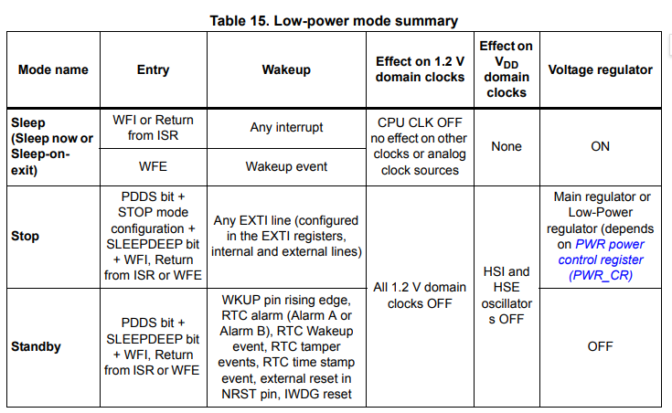
从上表中可以发现当我们使用了WFE指令之后将进入Sleep mode。
而几乎所有的处理器，进入低功耗模式或睡眠模式之后都会有部分CPU/MCU功能以及部分外设无法使用以实现降低能耗。而我们需要保证在使用了WFE指令之后，我们的delay还能正常工作，就必须保证我们使用的定时器不会在进入低功耗模式的时候被关闭。

从上图中可以发现当我们使用了WFE指令之后，除了处理器时钟（AHB总线）被停止，其他所有的时钟都将正常工作。这意味着挂载在APB上的外设时钟Timer都可以正常工作。
唯一一个需要注意的点是：
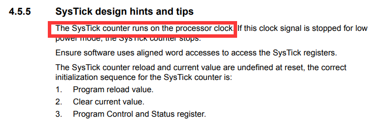
手册中提到，SysTick是基于处理器时钟的，因此当我们使用了WFE指令之后，将会导致SysTick无法正常工作。这应该也是Embassy中选择使用外设时钟进行delay设计的原因之一。同样的，在我们的系统中，由于我们在无任务调度的时候使用了WFE指令，因此我们不能使用Systick来实现操作系统的时间触发机制，我们只能按照Embassy的做法，占用一个外设时钟来作为delay的驱动时钟。
关于Memory.x的设置问题
https://github.com/rust-embedded/cortex-m-quickstart/blob/master/README.md
过大函数调用栈开销
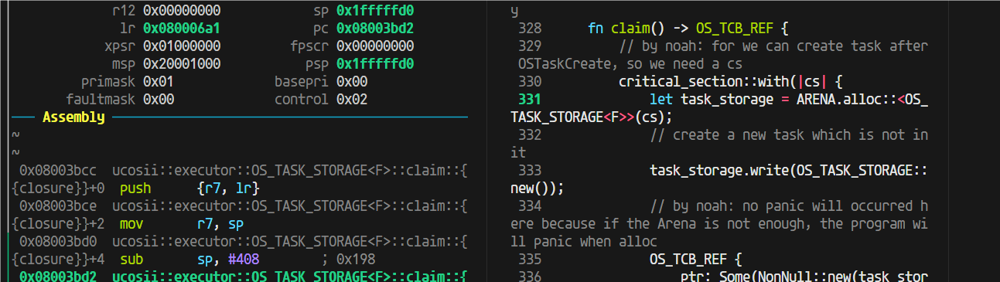
claim这里，这个critical-section，在进入这个临界区之前，sp是170，进入之后170的栈直接没了，直接消耗完了

这个闭包的栈这么大，416Byte
这就得仔细看看反汇编它为啥吃了这么多栈（sub sp, #408 进一步确认了里面函数栈用掉了408字节（416B是加上r7和sp的压栈））：
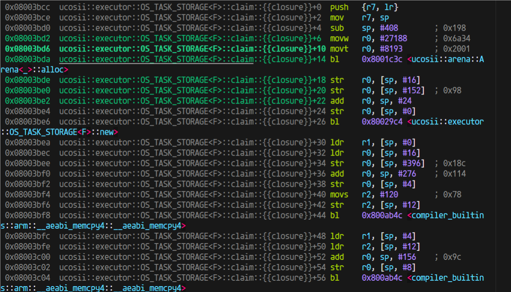
进入到arena的alloc后，用的栈也不少，我开始觉得是不是这里编译器没有优化（因为我为了调试方便设置的不优化）
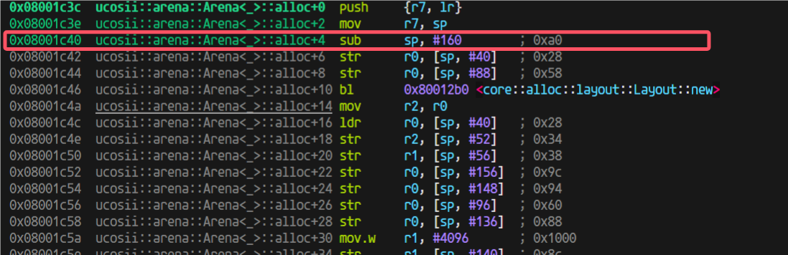
于是我就试试开优化
又出问题了，开了优化之前换栈之后的跳转返回出问题了

发现原因，优化过后这里做成内联了：
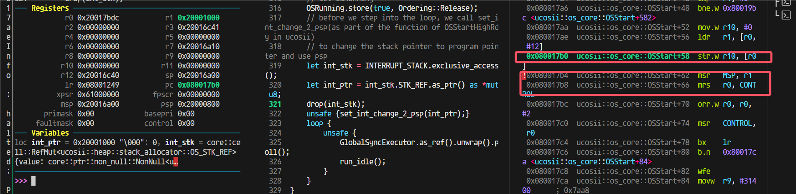
于是我想到：是不是可以利用这个，我想办法让这个外部函数做出内联，这样以后都直接不需要函数跳转返回了
第三阶段开发记录
第三阶段
在uCOS中有中断的场景下，引入embassy和优先级，以支持线程和协程的优先级调度；
- 中断就是抢占情况，需要保存堆栈，并（有可能）分配新堆栈，用于恢复下一个任务；
第三阶段设计
在开始第三阶段的coding之前，需要考虑以下的几个问题
明确任务边界
即需要明确哪一部分代码属于任务执行的代码。由于编译器为我们完成了非叶子future状态机的状态转换过程，因此导致在判定代码是否属于任务时会显得比较模糊。但是经过我们的分析之后，认为只有当从任务中返回到执行器代码时，才代表着该任务结束，即将状态转移等编译器生成的代码的执行也认为是任务的执行。如果这样划分的话，那么在中断时是否需要分配栈就变得容易区分了：如果当前在执行的是执行器代码，那么此时在中断中不需要分配栈(因为上一个任务已经主动让权了)；如果当前执行的不是执行器代码，那么此时如果发生了抢占，就需要在中断中就需要分配栈，因为当前的任务的执行流被打断了，并且即将被抢占。
如何让中断程序知道当前在执行哪部分代码？
对中断服务程序而言，如果不做任何的干预，它是无法知道当前在执行的究竟是执行器代码还是任务代码的。我们目前的设想是，将执行器代码放入临界区中，让其不可被打断，那么这样就会使得所有的中断都将在执行任务代码时产生，这样所有将导致抢占的中断都可以无脑分配一个栈给当前任务，使得处理得以简化。
目前有两种比较类型的实现方式：
- 为执行器增加一个状态成员，以标记当前执行器是否在执行任务代码
- 设定一个全局变量：进入执行器代码时以及退出执行器代码时都对一个全局变量进行设置，在进行栈分配时对全局变量进行检查
中断服务程序如何设计？
在中断服务程序中，我们还应该在中断返回时增加几个功能：
- 栈分配模块(仅在发生抢占时执行，即新任务的优先级更高)：用于分配一个新栈以供系统继续运行。而旧栈将用于保存原有任务的执行现场
- 唤醒模块：将新任务设置为就绪状态
- 抢占调度模块：用于在中断返回时进行重调度 我们将把前两个模块作为唤醒器Waker的功能。而对于抢占重调度，我们将重新编写一个调度函数接口。
抢占调度
首先先回顾一下目前我们的poll函数的执行流程：
- 启动：找到当前优先级最高的任务，然后执行该任务。
- 栈回收：在该任务让权之后，将会判断该任务是否拥有一个栈，如果拥有一个栈的话，将回收该栈
- 继续调度：完成栈回收之后，将重新寻找最高优先级的任务，并执行该任务。接下来将循环2、3步直至所有的任务都主动让权。
目前我们的设想是通过修改poll函数，使其能够在完成现阶段的功能下（即支持让权调度）支持抢占调度。
我们目前设想的方案为：若新任务没有栈（即代表新任务未被抢占过），旧任务没有栈，则此时需要分配一个新栈以供所有的任务执行，而旧栈将作为旧任务的私有栈用于保存上下文以及调用关系；若新任务有栈，旧任务没有栈，则此时不需要再额外分配一个栈，而是直接将新任务的上下文从栈中恢复之后，再将新栈作为所有任务的公共栈，而非新任务的私有栈，直至通过poll函数找到了一个拥有栈的任务之后，再将当前的公用栈回收再从。而旧栈同样将做为旧任务的私有栈使用。
此外，我们将对栈的操作分为三类：
- 栈回收：即将栈“销毁”，对应的可能是栈清空等操作
- 栈复用：即将某一个任务的私有栈作为所有任务共用的栈，只是将任务TCB中的栈指针置为None
- 栈分配：即通过栈分配器分配一个栈用以接下来的任务共用
因此，上述文字转换为表格即为：
| 切换方式 | 新任务 | 旧任务 | 操作 |
|---|---|---|---|
| 抢占 | 无栈 | 无栈 | 不存在 |
| 抢占 | 无栈 | 有栈 | 无需操作 |
| 抢占 | 有栈 | 无栈 | 不存在 |
| 抢占 | 有栈 | 有栈 | 不存在？ |
| 让权 | 无栈 | 无栈 | 无需操作 |
| 让权 | 无栈 | 有栈 | 不存在 |
| 让权 | 有栈 | 无栈 | 栈回收 |
| 让权 | 有栈 | 有栈 | 不存在 |
从上表的讨论可以发现，如果在wake阶段以及栈分配阶段进行栈分配并且将任务置入就绪队列的话，那么或许就可以直接复用现有的poll方法。
关于抢占的讨论与看法
在前面做1、2阶段的实现的时候，我在写执行器的poll函数的时候想了比较多的地方，最开始认为集中的把：设置当前任务为unready、回收栈、查找最高优先级任务调度整个过程都设计在一个临界区里面保证线性连续执行是高效并且有必要的。但是在后续开发思考的时候，至少对于必要性有了质疑，这里我先论证一下是否必要：
#![allow(unused)]
fn main() {
self.set_task_unready(task);
// after set the task as unready, we need to revoke its stack if it has.
if task.OSTCBStkPtr.is_some() {
dealloc_stack(task.OSTCBStkPtr.as_mut().unwrap());
}
// set the task's stack to None
task.OSTCBStkPtr = None;
self.find_highrdy_set_cur()
}我认为只需要对executor（因为设计为全局变量）的关键成员变量（也就是位图，OSPrioCur）分别设置临界区就行了，同样正确性是不会有问题的。
为了证明这一点，只能（我能想到的方法）列举出（几乎）所有情况来说明：
我们poll的操作如下：
#![allow(unused)]
fn main() {
pub(crate) unsafe fn poll(&'static self) {
// find the highest priority task in the ready queue
let task = critical_section::with(|_| self.find_highrdy_set_cur());
if task.is_none() {
return;
}
let mut task = task.unwrap();
if task.OSTCBStat.run_dequeue() {
if task.OSTCBStkPtr.is_none() {
task.OS_POLL_FN.get().unwrap_unchecked()(task);
} else {
// if the task has stack, it's a thread, we need to resume it not poll it
task.restore_context_from_stk();
}
}
// after the task is done, we need to set the task to unready(in bitmap) and also we need to find the next task to run
// both of this process should be done in critical section
loop {
match critical_section::with(|_| {
self.set_task_unready(task);
// after set the task as unready, we need to revoke its stack if it has.
if task.OSTCBStkPtr.is_some() {
dealloc_stack(task.OSTCBStkPtr.as_mut().unwrap());
}
// set the task's stack to None
task.OSTCBStkPtr = None;
self.find_highrdy_set_cur()
}) {
Some(t) => {
task = t;
if task.OSTCBStat.run_dequeue() {
// in the future, we should consider thread here
task.OS_POLL_FN.get().unwrap_unchecked()(task);
}
}
None => {
break;
}
}
}
}
}poll里面会进行任务的让权切换，poll的调用总是由于当前没有任务执行后才调用的，也就是所有任务都await了，这里我就想到有个地方会出问题：如果最后一个任务被poll调度执行了，然后它await出来，然后executor发现目前没有任务可以调度，那么跑到None准备break，如果这个时候中断来了，wake了某个任务，从而让该任务变为就绪，这个时候当然就在interrupt里面可以执行任务抢占调度，转向高优先级任务执行（也就是刚就绪的那个任务），这一步跳转的实现我在想应该可以复用执行器的poll，这样如果这个任务执行await让权，又能重新继续。 这会经历将当前的程序栈分配给当前任务，将当前任务设置为 这个时候是没有任务被选择执行的状态，那么是不是就没有保证当前上下文的必要，直接跳转到新的任务执行即可，并且这个时候是能直接复用poll的，只需要我们把外部的wfe的执行放置到idle任务去执行：
#![allow(unused)]
fn main() {
loop {
unsafe {
GlobalSyncExecutor.as_ref().unwrap().poll();
info!("==========enter Task Idle...===========");
run_idle();
info!("==============wake up!==============");
}
}
}也就是在这里，把run_idle()更改到idle任务（prio为OS_LOWEST_PRIO）去执行
TODO：临界区分开设置的可行性讨论：
ok，顺着这个思路我们重新想想中断的处理
如果中断都变成只是任务设置为就绪，那实时性无法保证，而且也做不到抢占调度。我的设想是执行器的poll就做成**一个循环：**找到最高优先级，调度最高优先级任务执行，然后将任务设置为非就绪，然后重复。中途发生抢占只会出现在执行任务的过程中（注意，这个是包括了：
#![allow(unused)]
fn main() {
if task.OSTCBStkPtr.is_none() {
task.OS_POLL_FN.get().unwrap_unchecked()(task);
} else {
// if the task has stack, it's a thread, we need to resume it not poll it
task.restore_context_from_stk();
}
}这整个过程）
这个时候如果中断抢占调度，那么将当前的栈（程序栈）分配给执行任务，保存它的上下文到这个栈，然后恢复新的任务，如果该任务有栈，那么把它的栈给到程序栈（设置PROGRAM_STACK变量，并且更改PSP设置程序栈），然后去掉该任务的栈（设置它的stk为NONE），然后恢复它的上下文执行，但是这里，这样这个任务执行的时候就是一个无栈的协程，用的是程序栈。等这个程序执行完成后，会先返回到原来中断处理函数的结尾（但是此时是函数返回进入，在调度执行前，应该要设置取消掉中断状态），然后继续返回回执行器的poll部分。
感觉还可以把这个过程细化的说一下（将几个关键过程放在同一个临界区的模式，后续这种模式可能会改变为拆分成多个临界区）：
- 中断抢占发生, 一部分现场立刻被保存到当前程序栈(psp)上（xPSR, PC, LR, R12, R0-R3），同时栈会切换到msp异常堆栈
- 中断处理函数里面，由于某个future好了，设置对应的任务为就绪，执行执行器的中断poll函数（目前还没写这个函数），并且在cortex-m的情况下，我们想要退出中断处理模式需要参考手册：
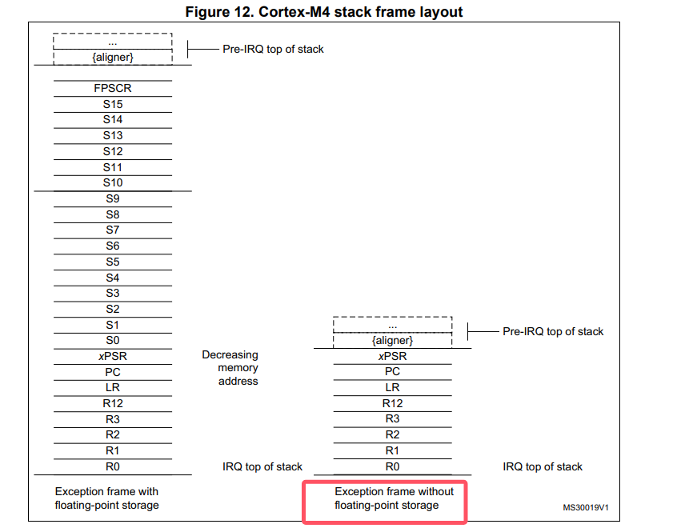

-
在执行器的中断poll函数（目前还没写这个函数，这个函数参考ucosii port里面的pendsv的实现）中， 会找到最高优先级任务，然后将程序栈分配给被打断的程序（可以判断是否当前任务就是最高优先级的，是的话就不分配栈，直接异常/中断返回即可）。这样当前任务的上下文就保存了。然后转向最高优先级任务的处理。
-
如果最高优先级任务是没有栈的，这里就和ucosii不一样，首先我们要给它分配一个栈空间用于程序执行，然后这里需要模拟压栈（先是xPSR, PC, LR, R12, R0-R3，其中xpsr赋值为0x01000000，PC赋值为执行器poll的地址，LR为一个TASK_RETURN函数地址，R12，R0-R3的值任意，然后是R4-R11赋值为任意, LR赋值为0xFFFFFFFD），这样后续的过程和第5步一样，相当于任务的栈就是目前的psp
-
如果最高优先级任务是有栈的，和ucosii基本一样，将任务的栈先出栈R4-R11, R14（这些是任务保存的不是进入异常保存的寄存器），然后将psp设置为当前的任务栈（出栈后的）（这里同步修改全局变量PROGRAM_STACK，之前它的值的所有权会转移给原任务的OSTCBStkPtr字段，用于上下文保存），然后执行BX LR（也就是R14，通常这里面会装入0xFFFFFFFD），进行异常返回，从而切换到新的任务执行。
执行器的poll的body也有变动：
对于执行到有栈的任务的时候，就需要进行栈回收，因为切换到该任务执行后就是把整个psp函数栈都切换走了，实际上当前的这个psp栈就不需要了，所以将变量PROGRAM_STACK的值更新为新的栈，将原来的栈dealloc掉。这里也就是我们这个栈回收的地方，前面上文的抢占过程就是栈分配产生的地方。
至此整个流程设计完成，还剩下关于临界区的分割的问题，我觉得可以写完了代码之后再做细化。
一点更正
会更模仿ucosii的处理，借助pendsv中断实现抢占的时候的任务切换。
中断poll函数：
#![allow(unused)]
fn main() {
/// this function must be called in the interrupt context, and it will trigger pendsv to switch the task
/// when this function return, the caller interrupt will also return and the pendsv will run.
pub(crate) unsafe fn interrupt_poll(&'static self) {
extern "Rust" {
fn OSTaskStkInit(stk_ref: NonNull<OS_STK>) -> NonNull<OS_STK>;
fn restore_thread_task();
}
// find the highest priority task in the ready queue
critical_section::with(|_| self.set_highrdy());
// judge if the highest priority task is the current running task(which has been preemped by the interrupt)
// prio's number is small indicates the priority is high
if self.OSPrioHighRdy.get() >= self.OSPrioCur.get() {
return;
}
let mut task = self.OSTCBHighRdy.get();
// then we need to restore the highest priority task
if task.OSTCBStkPtr.is_none() {
// if the task has no stack, it's a task, we need to mock a stack for it.
// we need to alloc a stack for the task
let layout = Layout::from_size_align(TASK_STACK_SIZE, 8).unwrap();
let mut stk = alloc_stack(layout);
// then we need to mock the stack for the task(the stk will change during the mock)
stk.STK_REF = OSTaskStkInit(stk.STK_REF);
task.OSTCBStkPtr = Some(stk);
}
// restore the task from stk
unsafe { restore_thread_task() };
}
}说明：为什么需要用PendSV
https://www.embedded.com/programming-embedded-systems-rtos-automating-the-context-switch/
In ARM Cortex-M, ISRs can also nest (preempt each other), so only the return from the last nested interrupt (back to the thread level) should perform a context switch. The problem is that the order of ISR preemption changes dynamically at runtime, so you generally don’t know which one will be the last.
An elegant solution employed in virtually all RTOSs for ARM Cortex-M is to take advantage of the same interrupt nesting mechanism that created the problem in the first place. Specifically, Cortex-M provides the PendSV exception (Pend Service Call) [2], which you can program to perform the context switch and configure with the lowest interrupt priority (0xFF). When the RTOS detects the need to switch the context, it can pend the PendSV exception. The interrupt prioritization ensures that PendSV will be the last ISR to run just before returning to the thread level. Moreover, the NVIC in ARM Cortex-M has a built-in hardware optimization called “tail chaining,” which eliminates the overhead of exiting one interrupt (e.g., SysTick) and entering PendSV, so the context switch is performed with minimal overhead.
https://blog.csdn.net/u012351051/article/details/124789418
当OS的Systick中断级别低于外部中断时，确实不会触发Fault，但是这带来了一个问题：
一般OS在调度任务时，会关闭中断，也就是进入临界区，而OS任务调度是要耗时的，这就会出现一种情况：
在任务调度期间，如果新的外部IRQ发生，CPU将不能够快速响应处理。
- 滴答定时器中断，制作业务调度前的判断工作，不做任务切换。
- 触发PendSV，PendSV并不会立即执行，因为PendSV的优先级最低，如果此时正好有IRQ请求，那么先响应IRQ，最后等到所有优先级高于PendSV的IRQ都执行完毕，再执行PendSV，进行任务调度。
差分等待链表的讨论
参考embassy-executor的poll里面timer queue的设计：

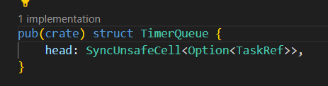

通过观察，我发现仿照这种定时器思路，设置一个超时时间，这种方式下，差分链表没什么意义，因为不需要去更新每个tcb的等待时间，只需要保留tcb的expire的绝对时间即可。不过每次需要找到等待时间队列里面expire值最小的任务，如果不提前进行排序的话，就要遍历查找了。
我的感觉是维护一个有序链表更好，让链表的头结点存放最小expire的等待任务，这样超时出队的时候也很快，只需要依次弹出所有的超时任务，直到遇到一个非超时的就停止，同时找next_expiration的值也很简单，只需要在deque后，把链表头的任务的等待值给出即可。它唯一的开销就是在await的时候注册这样一个等待任务，但是这种开销本身和遍历查找类似，并且发生在程序运行时，而我们设计的这个时间更新情况，是发生在中断时，中断时的处理应该简单迅速，所以我决定有序链表更好。
那么我们需要和原来embassy变动的地方就主要是那几个时间链表的关键接口：

时钟中断的设计问题记录
如果是通过设置定时器的触发中断来实现定时唤醒，那不仅在普通的poll里面会这样设置时间
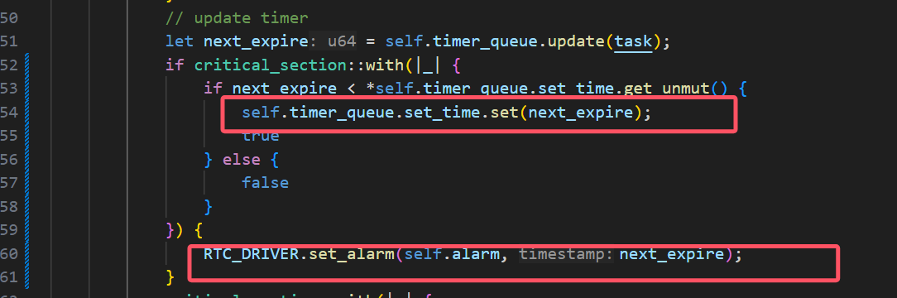
（我是拿一个变量set_time来表示目前定时器设置的中断触发时间点），同时还需要每次触发时钟中断后，马上也再设置下一次的中断唤醒时间点，
中断开发
这里是pac定义中断向量名称的地方。
有个问题是怎么实现
#![allow(unused)]
fn main() {
/// an async delay
pub fn OSTimeDly(_ticks: INT32U) {
}
}普通的函数里面是不能使用await的，而事实上，我们不可能让delay一个函数做到和await一样的效果，因为await是需要编译器生成代码的时候针对代码的上下文生成相应的状态保存代码，而这不可能由一个函数在运行时做到。
debug记录
pendsv恢复栈出现问题：
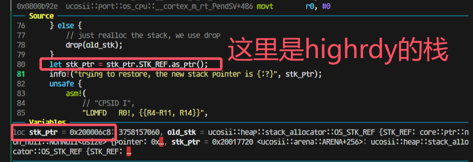
但是上一步分给没有栈的新任务的模拟压栈是0x20001800

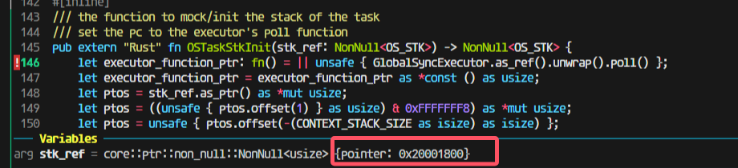
然后压栈完成后会变成17c0（因为有16个4字节寄存器压栈）
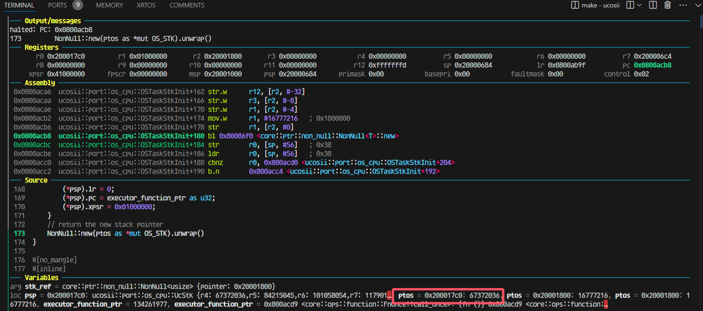
走进pendsv这一步还是对的，取出来的highrdy的栈是0x200017c0：

这一步出问题了；
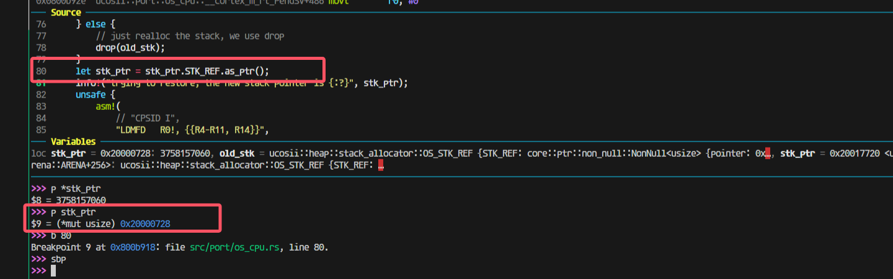
找到原因：
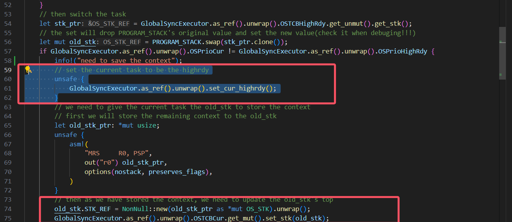
这里我先把cur设置为了highrdy导致后面将上下文最终保存到cur任务的时候实际上保存错了位置，保存到highrdy的位置里面去了。所以应该修改为保存了上下文到cur任务后，再调整cur任务为higrdy任务：

改完后，到这里，栈pop出的值都是对的：

观察模拟压栈的内容：

是完全正确的。
发现pendsv被连续触发，怀疑是需要清除什么中断标志
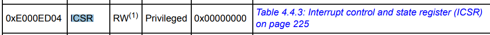

但是发现进入pendsv的时候PENDSVSET这一位就被清零了的
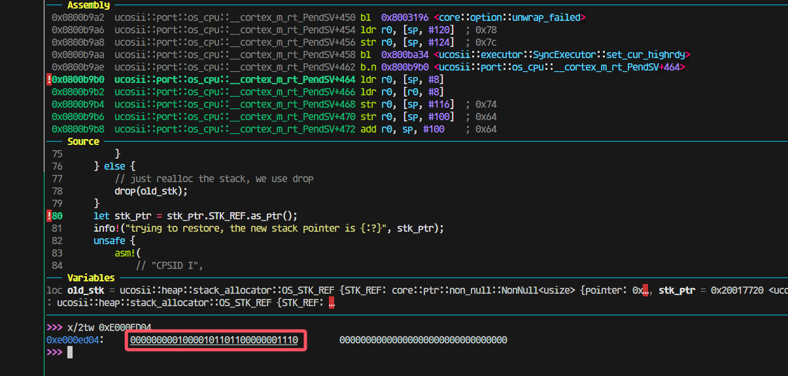
最后发现是新任务有栈（之前模拟压栈或者本身就有，导致进入poll之后就又跑去restore context了)：

中断保存的lr有问题

在进入中断的时候出现了问题，这里有个跳转才会进入我写的pendsv，那就会出现pendsv里面保存的lr是错误的。
所以我在想是不是开优化可以解决这个问题，做到不进行函数跳转。

果然如此
栈溢出
在进行模拟压栈时，由于没有考虑到满递减堆栈的前自减，导致最高地址的xpsr寄存器溢出：
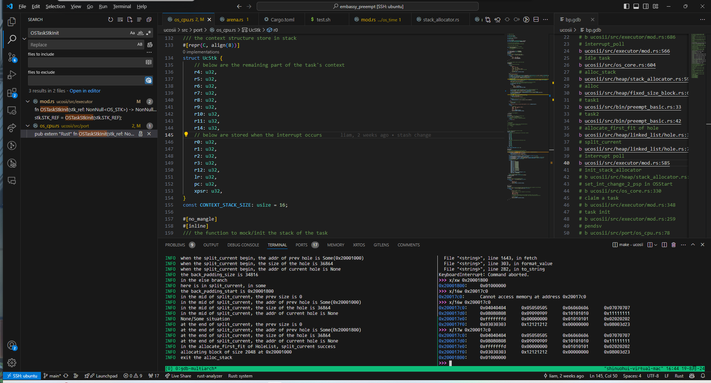
使得堆分配器的元数据的hole的size成员被覆盖：

唤醒时的None
在alarm中断出现时，发现在对需要唤醒的任务引用调用wake方法时，出现自动解引用的None/unwrap异常
经过排查发现是dequeue中的set函数将导致头节点中的Some被覆盖为None：

因此我们将on_task函数的调用提前到set函数之前执行
唤醒错误
在alarm中断发生时，在多个任务需要等待的情况下，发现唤醒的任务错误。经过排查发现是update更新time_queue时出现错误，没有考虑到需要插入到队尾的情况，导致当某一个任务需要被插入到队尾时，会直接将头指针覆盖，使得被唤醒的任务不符合预期
set_alarm的设计
我们采取使用循环set_alarm的方式实现alarm的设置：

使用这种方式的主要原因如下：
就是假如说现在timequeue里面已经有一个任务（假如说叫任务1）正在延时，然后我现在有一个任务也需要延时，但是他在set_alarm的时候发现已经到了，set_alarm就会返回false，但是他并不会去设置输出比较通道的ccr寄存器。如果这个时候是if判断的话，那么现在这个执行流就会继续往下走了，但是这个时候alarm并没有被设置为任务1的延时时间点
我们在讨论的过程中还出现了一种想法：
还有就是可能在原来任务延时的时候他的时钟设置就被设置了，然后在新任务发现超时了之后，由于没有对时钟配置进行修改，就会使得时钟还保留着原来任务的延时时间设置。这么看的话好像又不用重新set alarm一次。但是我刚刚重新看了一遍set alarm，他的timestamp是每次调用set alarm都会被设置的，所以好像还是要像poll里面那样用循环。但是讲道理这个对我们的影响应该不大，因为每次任务执行结束我们都会set一次alarm。但是我不知道embassy是怎么处理这个问题的，可能他也觉得影响不大就直接忽略了)
我们认为在我们当前的系统中为了提高实时性，仍然需要采用循环的方式进行alarm的设置，因为：
在新任务出现超时时，仍然可能对原来的时钟配置进行修改
set_alarm有两次超时情况，第一次超时的确不会改变时钟配置，但是如果第一次检测没超时，但是设置了时钟后又超时，就会更改时钟
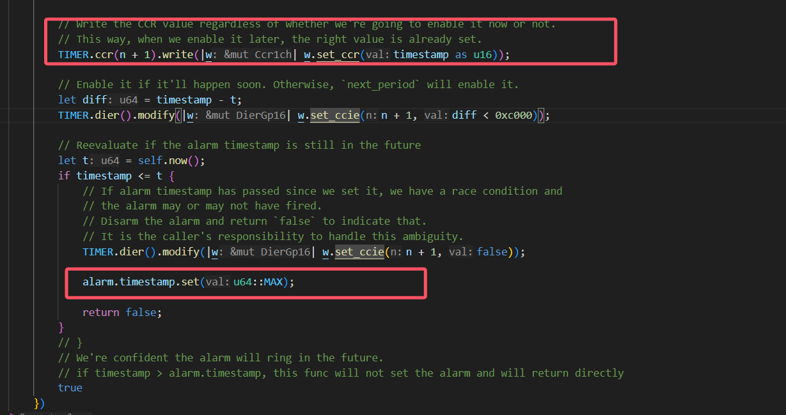
。而且你后面说的timestamp的存在也确实导致需要通过这样的while循环来设置正确的时钟：


神奇的ffi
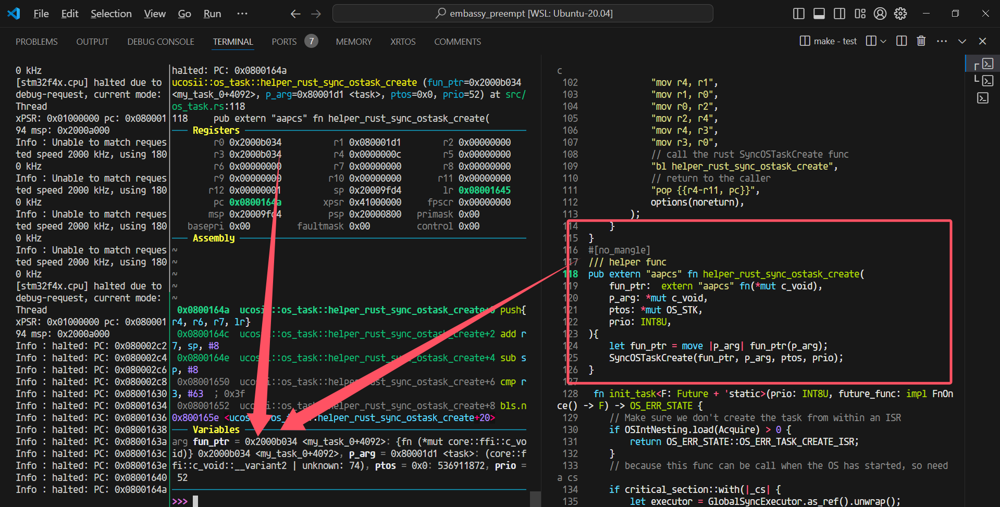
这个时候就是把参数从R0开始作为第一个参数放置的位置
详细描述一下这个问题：
参数情况：
# cargo build --release
[profile.release]
codegen-units = 1
debug = 2
opt-level = 0
执行命令cargo build –release
结果：
Compiling ucosii v0.1.0 (/home/liam/learnRust/embassy_preempt/ucosii)
Finished `release` profile [unoptimized + debuginfo] target(s) in 2.48s
用gdb-multiarch进行调试，调试代码：
尤其注意!!!返回值OS_ERR_STATE这里是4字节
#![allow(unused)]
fn main() {
// os初始化
OSInit();
// 创建两个任务
SyncOSTaskCreate(task1, 12 as *mut c_void, 11 as *mut usize, 10);
...
//
pub trait ReturnUnitOrNeverReturn {}
impl ReturnUnitOrNeverReturn for ! {}
impl ReturnUnitOrNeverReturn for () {}
/// Create a task in uC/OS-II kernel. This func is used by C
// _ptos is not used in this func, because stack allocation is done by the stack allocator when scheduling
pub extern "aapcs" fn SyncOSTaskCreate<F, R>(task: F, p_arg: *mut c_void, _ptos: *mut OS_STK, prio: INT8U) -> OS_ERR_STATE
where
// check by liam: why the future is 'static: because the definition of OS_TASK_STORAGE's generic F is 'static
F: FnOnce(*mut c_void) -> R + 'static,
R: ReturnUnitOrNeverReturn,
{
// check the priority
if prio > OS_LOWEST_PRIO as u8 {
return OS_ERR_STATE::OS_ERR_PRIO_INVALID;
}
...
}
}看到对应的汇编部分（完整的给出传参部分的处理）
0x080031dc preempt_test::__cortex_m_rt_test_basic_schedule+6 bl 0x8006344 <ucosii::os_core::OSInit>
0x080031e0 preempt_test::__cortex_m_rt_test_basic_schedule+10 movs r0, #12
0x080031e2 preempt_test::__cortex_m_rt_test_basic_schedule+12 str r0, [sp, #8]
0x080031e4 preempt_test::__cortex_m_rt_test_basic_schedule+14 movs r1, #11
0x080031e6 preempt_test::__cortex_m_rt_test_basic_schedule+16 str r1, [sp, #4]
0x080031e8 preempt_test::__cortex_m_rt_test_basic_schedule+18 movs r2, #10
0x080031ea preempt_test::__cortex_m_rt_test_basic_schedule+20 bl 0x8000d80 <ucosii::os_task::SyncOSTaskCreate>
//调用函数,包含部分传参
...
0x08000d80 ucosii::os_task::SyncOSTaskCreate+0 push {r7, lr}
0x08000d82 ucosii::os_task::SyncOSTaskCreate+2 mov r7, sp
0x08000d84 ucosii::os_task::SyncOSTaskCreate+4 sub sp, #136 ; 0x88
0x08000d86 ucosii::os_task::SyncOSTaskCreate+6 str r1, [sp, #28]
0x08000d88 ucosii::os_task::SyncOSTaskCreate+8 str r0, [sp, #32]
0x08000d8a ucosii::os_task::SyncOSTaskCreate+10 mov r3, r2
0x08000d8c ucosii::os_task::SyncOSTaskCreate+12 str r3, [sp, #36] ; 0x24
0x08000d8e ucosii::os_task::SyncOSTaskCreate+14 str r0, [sp, #76] ; 0x4c
0x08000d90 ucosii::os_task::SyncOSTaskCreate+16 str r1, [sp, #80] ; 0x50
0x08000d92 ucosii::os_task::SyncOSTaskCreate+18 strb.w r2, [r7, #-49]
0x08000d96 ucosii::os_task::SyncOSTaskCreate+22 movs r0, #0
0x08000d98 ucosii::os_task::SyncOSTaskCreate+24 strb.w r0, [r7, #-62]
0x08000d9c ucosii::os_task::SyncOSTaskCreate+28 movs r0, #1
0x08000d9e ucosii::os_task::SyncOSTaskCreate+30 strb.w r0, [r7, #-62]
0x08000da2 ucosii::os_task::SyncOSTaskCreate+34 cmp r2, #63 ; 0x3f
0x08000da4 ucosii::os_task::SyncOSTaskCreate+36 bhi.n 0x8000df0 <ucosii::os_task::SyncOSTaskCreate+112>
0x08000da6 ucosii::os_task::SyncOSTaskCreate+38 b.n 0x8000da8 <ucosii::os_task::SyncOSTaskCreate+40>
0x08000da8 ucosii::os_task::SyncOSTaskCreate+40 ldr r0, [sp, #32]
0x08000daa ucosii::os_task::SyncOSTaskCreate+42 movs r1, #0
可以观察到，参数的值来源于栈，下图给出了gdb-multiarch里面的变量信息（执行到0x08000da2 ucosii::os_task::SyncOSTaskCreate+34 cmp r2, #63 ; 0x3f）
可以看到变量值都是对的（task的值为0xc40这里不太懂为什么）。
─── Variables ───────────────────────────────────────────────────────────────────────────────────────────────────────────────────────────────────────────────────────────────────────────────────────────────────────────────────────────────────────────────────────────────
arg task = 0xc40: {fn (*mut core::ffi::c_void)} 0xc40, p_arg = 0xc: (core::ffi::c_void::__variant2 | unknown: 204), _ptos = 0xb: 14994696, prio = 10
当我们把返回值OS_ERR_STATE改为8字节的时候，就开始出现问题：
#![allow(unused)]
fn main() {
0x08000eaa ucosii::os_task::SyncOSTaskCreate+0 push {r7, lr}
0x08000eac ucosii::os_task::SyncOSTaskCreate+2 mov r7, sp
0x08000eae ucosii::os_task::SyncOSTaskCreate+4 sub sp, #128 ; 0x80
0x08000eb0 ucosii::os_task::SyncOSTaskCreate+6 str r2, [sp, #24]
0x08000eb2 ucosii::os_task::SyncOSTaskCreate+8 str r1, [sp, #28]
0x08000eb4 ucosii::os_task::SyncOSTaskCreate+10 str r0, [sp, #32]
0x08000eb6 ucosii::os_task::SyncOSTaskCreate+12 mov r0, r3
0x08000eb8 ucosii::os_task::SyncOSTaskCreate+14 str r0, [sp, #36] ; 0x24
0x08000eba ucosii::os_task::SyncOSTaskCreate+16 str r1, [sp, #72] ; 0x48
0x08000ebc ucosii::os_task::SyncOSTaskCreate+18 str r2, [sp, #76] ; 0x4c
0x08000ebe ucosii::os_task::SyncOSTaskCreate+20 strb.w r3, [r7, #-45]
0x08000ec2 ucosii::os_task::SyncOSTaskCreate+24 movs r0, #0
0x08000ec4 ucosii::os_task::SyncOSTaskCreate+26 strb.w r0, [r7, #-58]
0x08000ec8 ucosii::os_task::SyncOSTaskCreate+30 movs r0, #1
0x08000eca ucosii::os_task::SyncOSTaskCreate+32 strb.w r0, [r7, #-58]
0x08000ece ucosii::os_task::SyncOSTaskCreate+36 cmp r3, #63 ; 0x3f
}刚进入函数的时候，寄存器的值如下

对比两次反汇编，能看到最大的不同有两个：
- 除了task参数，其他参数在4字节返回值的时候是放在r0 r1 r2的，而8字节的时候是放在r1 r2 r3的
- sub sp, #136 ; 0x88这里是返回值为8字节的时候，比4字节在栈的使用上，多用了4字节。
同样走到cmp r3,#63的位置，这个时候看变量的值：
─── Variables ──────────────────────────────────────────────────────────────────────────────────────────────────────────────────────────────────────────────────────────────────────────────────────────────────────────────────────────────────────────────────────────────────────────────────────────────────────────
arg task = 0xc00: {fn (*mut core::ffi::c_void)} 0xc00, p_arg = 0xc: (core::ffi::c_void::__variant2 | unknown: 112), _ptos = 0xb: 14971144, prio = 10s
同样是正常的。
相同的方式，我们将优化等级开到o1，保持8字节的OS_ERR_STATE返回值
同样进入函数时可以看到寄存器的值（同时变量的值也是正确的）：

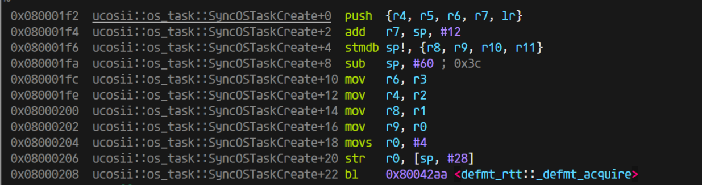
由于优化，直接把最开始的判断prio部分去掉了，因为测试里面没有大于64的情况（并且测试发现，即使有这种情况，也会优化掉）。
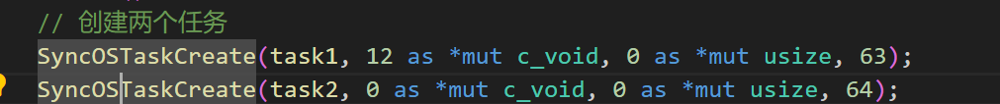
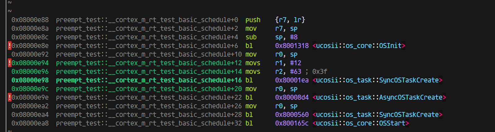
到这一步都是完全符合预期的，8字节的内容并没有影响到gdb-multiarch对于变量值的解析，只是参数的处理上有些变化，于是，我进一步有一个猜想，如果我按照aapcs的abi标准调用SyncOSTaskCreate, 是否可能出现在c语言那边调用rust库那样的问题：
这里是开优化（完全符合aapcs的规范，除了R0没有使用，R1-R3放了前三个参数，第四个参数就放进了栈里面）
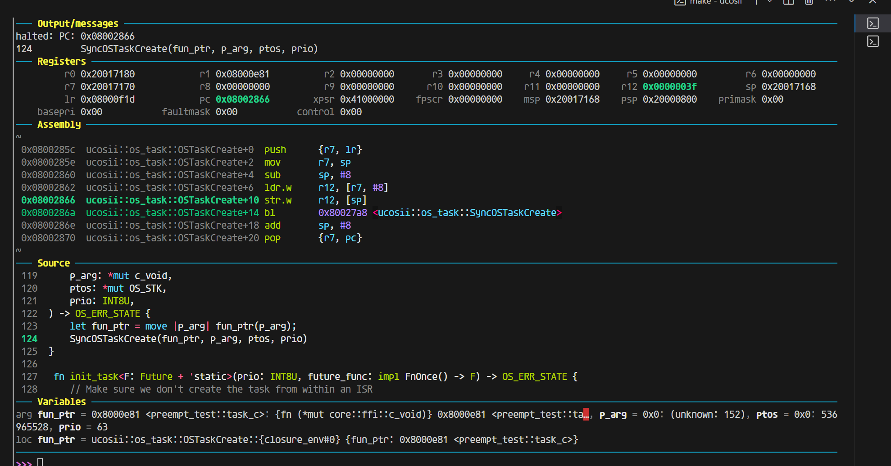
一切正常，上图是开优化的结果
不开优化（同样参数完全正确，并且完全符合aapcs的规范，除了R0没有使用，R1-R3放了前三个参数，第四个参数就放进了栈里面）：
ps: 这里你能注意到r0的值是进入函数之前，保存的栈的值，对应汇编add sp, #8(不明白为什么这里需要这条指令)

而我们只调整返回值为4字节看看：
开优化下，你可以看到这里的值完完全全符号正宗的aapcs规范：

那说明在rust的这边（ap文件也是rust写的），是的确都正确的，那我们返回去看看c代码调用rust的静态库出的问题：
回到c ffi的问题
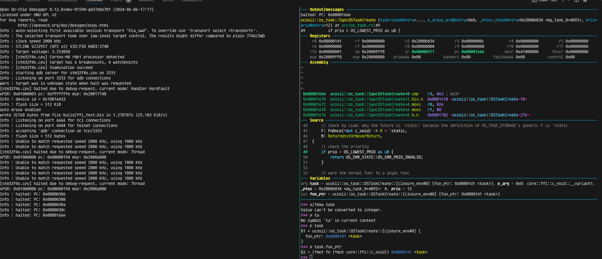
如果返回值OS_ERR_STATE是4字节，那么这个是正常合理的结果，传参放在r0-r3四个参数正好都能放在寄存器里面
但是如果我将返回值OS_ERR_STATE改为8字节：

终于能解释这里问题的原因了：
因为rustc编译器对于64字节（在aapcs的abi情况下）的处理就是：
将r0保留(目前不知道为什么不使用r0,并且进入函数之前，设置r0的值为add r0, sp, #8), 然后同样参数依次传递到r1(第一个参数) r2(第二个参数) r3(第三参数) 以及栈上(第四个以及之后的参数)。这种abi模式的情况和gcc的不兼容，我后续尝试声明c的extern函数的返回值为64位，但是它并没有在传参上做特殊处理，但是我仍然疑惑的是，为什么在网上没有查到rustc编译器对于这部分的特殊处理，或者说aapcs有规定这部分的处理吗？
关于抢占的细节问题
当一个任务被抢占，现场保留到栈上，当它在恢复的时候，如果又被抢占了，同样上下文保存在栈里面，然后在再一次恢复的时候，只恢复到第二次被抢占的位置，并且第一次被抢占时保留的上下文都清除了，这就导致了bug。
更简明的说法是，原本任务的interrupt poll是抢占了一个无栈的协程，但是现在出现有可能抢占的是一个有栈的线程的情况
一个解决方法是，避免这种抢占的发生，改进pendsv和poll的实现
poll在resume线程（有栈）任务的时候，不再设置cur与highrdy一致，这样当进入pendsv的时候，cur与highrdy必然不等，在TCB里面新加入一个成员变量：is_in_thread_poll用于标记任务是在协程状态还是线程状态，这个值用于在pendsv里面判断是否需要保存当前任务上下文。
这种情况下，不可能会抢占一个有栈的线程，因为当cur任务被设置为有栈的线程这种情况是在pendsv里面进行的，而在外部正常程序运行的时候，所有任务都被看成是无栈的协程在运行，不会存在在thread模式下，cur task是有栈的。
bug补充
还会存在一种丢失唤醒的情况，这是因为在当前任务（假设优先级为35）delay时，设置加入1ns延迟，然后切换到idle任务去执行（目前所有任务都在delay），然而正在切换的过程中，就发生了TIM的时钟中断，将当前任务唤醒，并且dequeue了所有任务（也就是此时所有任务都就绪了），然后设置超时时间就顺其自然的设置为u64 max，因为所有任务都就绪了，
下图的task18的优先级就是35
└─ ucosii::executor::{impl#10}::set_highrdy @ src/executor/mod.rs:694
INFO ---task18 end---
└─ comprehensive_test::task18 @ src/bin/comprehensive_test.rs:352
TRACE OSTimeDly
└─ ucosii::os_time::OSTimeDly @ src/os_time/mod.rs:25
TRACE set_task_unready
└─ ucosii::executor::{impl#10}::set_task_unready @ src/executor/mod.rs:729
INFO in delay_tick the next expire is 489460
└─ ucosii::os_time::delay_tick @ src/os_time/mod.rs:42
TRACE set_alarm
└─ ucosii::port::time_driver::{impl#4}::set_alarm @ src/port/time_driver/mod.rs:329
INFO set the alarm at 489460
└─ ucosii::port::time_driver::{impl#4}::set_alarm @ src/port/time_driver/mod.rs:330
TRACE set_highrdy
└─ ucosii::executor::{impl#10}::set_highrdy @ src/executor/mod.rs:694
TRACE interrupt_poll
└─ ucosii::executor::{impl#10}::interrupt_poll @ src/executor/mod.rs:573
INFO interrupt poll :the highrdy task's prio is 63
└─ ucosii::executor::{impl#10}::interrupt_poll @ src/executor/mod.rs:579
TRACE TIM3
└─ ucosii::port::time_driver::TIM3 @ src/port/time_driver/mod.rs:46
INFO the alarm is triggered!!!
└─ ucosii::port::time_driver::{impl#3}::on_interrupt::{closure#0} @ src/port/time_driver/mod.rs:244
TRACE trigger_alarm
└─ ucosii::port::time_driver::{impl#3}::trigger_alarm @ src/port/time_driver/mod.rs:281
TRACE alarm_callback
└─ ucosii::executor::{impl#10}::alarm_callback @ src/executor/mod.rs:472
INFO dequeue expired
└─ ucosii::executor::timer_queue::{impl#0}::dequeue_expired @ src/executor/timer_queue.rs:67
TRACE wake_task_no_pend
└─ ucosii::executor::wake_task_no_pend @ src/executor/mod.rs:766
TRACE set_alarm
└─ ucosii::port::time_driver::{impl#4}::set_alarm @ src/port/time_driver/mod.rs:329
INFO set the alarm at 18446744073709551615
└─ ucosii::port::time_driver::{impl#4}::set_alarm @ src/port/t
TRACE IntCtxSW
└─ ucosii::executor::{impl#10}::IntCtxSW @ src/executor/mod.rs:539
TRACE find_highrdy_prio
└─ ucosii::executor::{impl#10}::find_highrdy_prio @ src/executor/mod.rs:717
INFO the new_prio is 35, the highrdy task's prio is 63, the cur task's prio is 35
└─ ucosii::executor::{impl#10}::IntCtxSW::{closure#0} @ src/executor/mod.rs:543
INFO no need to switch task
└─ ucosii::executor::{impl#10}::IntCtxSW::{closure#0} @ src/executor/mod.rs:551
TRACE exit TIM3
技术报告
摘要
embassy_preempt是一个嵌入式异步实时操作系统的调度模块。它通过Rust提供的协程机制，结合embassy的异步执行器的实现方式，并借鉴传统嵌入式实时操作系统uCOSII的任务切换机制，在任务调度时，若当前任务主动让权，则会进行栈复用；若当前任务被抢占，则会进行栈分配，并进行现场的保存，使得embassy_preempt同时具有了embassy低内存开销的优势以及uCOSII高实时性的特点。
项目背景
在通常情况下，如uCOSII的嵌入式操作系统基本都以线程（或任务）为基本单位进行调度，这就使得每一个任务都将占有一个私有的栈空间。而在实际的应用中，在任务调度的过程中，大部分任务释放CPU都是由于主动让权，而非被高优先级的任务抢占，这使得栈空间存在一定的浪费。
而在embassy中，通过引入Rust的协程机制，使得栈空间的利用率得到了极大的提升。但是由于embassy的线程执行器中的协程之间无法进行抢占，并且进行协程调度时并没有优先级裁决机制，在多任务的情景下将导致若干个任务出现未被及时唤醒的情况，导致实时性较差，这是一个嵌入式实时操作系统无法接受的。
我们希望在已有的嵌入式实时操作系统的高实时性以及embassy的协程机制之间进行“折衷”，编写一个既可以满足实时应用环境下的实时性要求，又可以尽可能缩小内存使用的嵌入式异步实时操作系统调度模块——embassy_preempt。
实现方案
执行器部分
执行器分成两个环节：thread模式下没有任务抢占的循环POLL环节和interrupt模式下发生任务抢占的interrupt POLL环节
-
thread的循环poll思路：
函数会直接从执行器里面取出highrdy任务调度执行，所以需要保证调用thread poll的时候是已经确定好了最高优先级的任务的，然后循环里面先poll任务执行，任务poll完后，一定是遇到pending或者任务完成退出，由于我们内置了时钟，这里就需要进行时钟的更新设置，然后就设置任务为非就绪等待后续的waker环节。最后找到新的最高优先级，继续循环
-
interrupt poll的思路：
中断POLL函数会进行抢占式的任务调度，在这里个函数里面主体会进行最高优先级是否有栈的检验，对于没有栈的最高优先级任务，它的调度执行我们会进行模拟压栈，让其变成一个有栈的任务，从而做到栈的分配（因为原有的栈在抢占调度的情况下会分配给当前执行任务用于上下文保存，那么新的任务执行一定需要额外的栈，要么是新任务本身就自带了，不然就需要额外分配一个）。然后我们会开始同一个的任务切换操作，这个操作被放置在pendsv可悬挂软中断里面，这是因为需要及时满足其它中断的需求，最后结束其它中断处理后才进行统一的任务切换处理。
这里说明一下，interrupt poll实际上只被我们暴露给用户的外部接口IntCtxSW调用，这个接口只是在调用interrupt poll之前进行了优先级判断，检查是否需要进行任务切换，如果需要就会调用interrupt poll
核心环节是栈的分配和回收
-
栈的分配过程是在中断过程中发生的（也就是抢占式调度），在发生中断并且需要抢占的时候，先设置当前任务状态是interrupt状态，表明当前任务被抢占，然后判断最高优先级任务（即将切换到的任务）是否有栈：
- 对于没有栈的待切换任务，就需要先进行栈分配并“模拟压栈”：即将此分配的栈模拟为一个被中断抢占的有栈任务的栈，那么里面就会保存有中断的pc指针以及其它寄存器信息，这里我们主要是设置pc指针为执行器POLL函数指针从而让没有栈的任务能够通过poll执行。
- 而对于有栈的待切换任务，这里不需要做处理，后续的操作都会认为任务是有栈的
然后在实际任务切换环节，采用悬挂的pendsv软中断形式进行，避免重复无效任务切换，保证处理完紧急中断之后才进行任务切换。
-
栈的回收是在pendsv中断里面完成的，正好是顺着往下描述，
进入pendsv的时候就需要把现场进行保护，保存任务的上下文到psp栈
- 对于当前任务是thread模式的情况，如果进入pendsv中断，那么就说明是在恢复一个有栈的任务，并且当前任务是正常await让权出来的，那么就需要drop掉当前协程任务共用的程序栈，转而使用恢复了栈的任务的栈，也就是说在恢复有栈任务执行的时候，将其变成无栈协程执行，并且回收掉之前（当前任务）使用的程序栈（这个时候就不存在任务上下文的保存）。
- 而对于当前任务是interrupt模式的情况，说明进入pendsv中断是由于任务抢占导致的，那么需要将当前的程序栈从协程任务共享的栈变成当前interrupt私有的栈，然后将程序栈换成待调度的最高优先级的任务的栈（最高优先级任务一定有栈，触发pendsv之前保证了这一点（模拟压栈）），这样就存在现场的保存需求，需要将任务的psp栈保存到任务tcb的栈指针上。然后同样的也是恢复最高优先级任务执行。
思维流程图：

创新点
可抢占的内核
可以中断正在运行的任务，切换到另一个任务执行。嵌入式系统里通常是由于中断触发任务的调度，用户可以在实现中断驱动后，使用IntCtxSW调用操作系统的抢占调度操作
栈复用
充分利用rust的协程机制，在非抢占的情况下，所有任务共同使用一个栈区，没有任务私有栈。当发生抢占调度时，分配给被抢占任务栈用于现场保护，并且能在恢复任务继续执行时合理回收不使用的栈，使得空间的利用率得到了一定程度上的提升。此外，栈的分配为了实时性和通用性采用了block allocation和linked-list allocation 算法结合的方式
兼容性（Taskcreate、OSTimeDly）
主要是在和原来ucosii的c接口上进行兼容，通过FFI实现任务创建函数和delay函数与原来一致的接口
time_queue与时钟的优化
为了保证调度的高效实时，timer_queue做成了超时时间的排序链表，并且时钟设置采用单TIM单Channel上升沿触发超时完成所有任务的超时设置，能更准确高效的保证实时性。此外，我们还考虑到了等待时间极短的情况。我们通过循环设置alarm的方式保证在等待时间极短的情况下alarm一定会被设置为下一个超时时间。
难点
模拟压栈与内存对齐
模拟压栈的问题在于传入的栈指针很可能不是我们想要的8字节对齐的（肯定是4字节对齐），所以我们会把栈指针给先向上加4字节再截取8字节对齐，从而向上8字节对齐，但是由于传入的栈指针是满堆栈的初始指针，默认是当前元素是已有内容的，压栈的时候需要先栈指针下移，然后再压入栈，所以最后的栈指针的指向一定是偏移17个4字节（因为保存了17个寄存器的内容）。
临界区与任务边界
只在对于竞争资源（主要是全局变量）的访问修改处进行了临界区设置，保证了可抢占性，并且操作系统启动之后，执行到任何时刻的代码都会对应着一个任务的执行，在执行器的poll和interrup poll中，也都会属于到当前任务的代码，不存在没有任务对应的代码，保证了抢占时的上下文有明确的任务tcb保存
如何统一异步任务与同步任务？
统一异步任务与同步任务，从本质上来看是统一二者的TCB；而在TCB中，一个同步任务与一个异步任务的之间有两个区别：
- 任务函数的保存方式：同步任务通常是直接保存函数指针，而一个异步任务则是保存任务异步函数对应的future。
- 栈的分配：同步任务通常在初始化的时候就占有了一个栈，而一个异步任务只有在被抢占时才会得到一个栈。
为了充分发挥Rust异步的空间优势，我们只能尝试将一个同步任务函数转换为一个异步的future，并且尝试将同步任务的栈分配模式与异步任务的栈分配模式统一。因此对异步任务而言，我们可以直接借鉴embassy的做法，不需要做任何改变；而对同步任务而言，如果要把同步任务也转换为一个future，我们就需要解决以下问题：
- 我们应该如何根据一个同步任务函数指针（或闭包）创建出一个对应的future？
- 栈分配模式如何统一？
首先，对第一个问题，从逻辑上来看，对一个同步任务而言，他并没有一个主动让权的await点，那么同步任务实际上与一个没有await点的异步任务无异。因此如果将这个逻辑应用在我们的系统中，那么我们就只需要为同步任务函数套上一层async函数闭包，那么我们就将得到一个没有await点、代表着同步函数的future，而这样的闭包由于rust的特性，是直接创建在代码区的，而不会去占用内存空间。
对于第二个问题，我们首先要知道“任务栈”在一个操作系统中的作用是什么。在一个OS中，一个任务栈主要有两个：
- 保存一个任务执行过程中的函数调用
- 当一个任务被抢占时进行任务现场保存，以便后续进行现场恢复
此外，一个线程与一个协程最大的区别就是，一个协程是无栈的，而线程是有栈的。因此我们可以简单地通过一个任务是否有一个私有栈来判断一个任务是线程状态还是协程状态。
我们还需要在这里明确“抢占”与“让权”的意义是什么。在我们的系统中，除了异步任务通过await点主动让权将CPU交给内核进行调度外，其余的的任务切换方式都认为是抢占的。
因此，一个任务其实仅仅需要在他被抢占的时候，将当前使用的栈变为他的私有栈，并用于上下文保存即可。所以如果我们成功将一个同步函数转换为一个future，并且在同步任务创建时将其自带的栈回收并且统一由堆分配器进行任务栈分配，那么同步任务与异步任务的栈分配模式就可以统一了：
- 抢占模式：需要将当前的栈（需要将当前栈作为私有栈是由于当前栈上保存了任务中的函数调用）作为当前任务的私有栈并且进行上下文保存。
- 让权模式：一个任务通过await点进行任务切换时，将不会进行栈切换，而是所有处于协程状态的任务共用一个栈，而每一个线程状态的任务都拥有自己的私有栈。
除此以外，我们将对原来idle的处理也改为了协程模式，idle任务是不会拥有栈执行的，在遇到idle任务被抢占的时候，会将idle任务使用的协程栈转让给抢占的将执行的无栈协程任务，用于模拟压栈，而idle的上下文是不会被保留的，这一点和普通的任务被抢占是不一样的，从而优化的任务抢占的情况，并且也减少了栈的开销。
因此，经过我们处理的同步任务由于没有await点，就不会存在让权切换的模式。因此同步任务将在创建时通过栈回收从线程模式转换为协程模式，然后在其第一次被抢占时拥有它的私有栈，并且从协程模式转换为线程模式，并且由于同步任务不存在让权，其将一直处于线程模式。而这一套同步任务的任务切换方式与异步任务的切换方式是兼容的。在这种模式下，任务在运行的过程中将不一定从始至终都以线程或者协程的方式存在，而是在不断进行状态的转换。至此我们就将同步任务与异步任务统一起来了。
最后我们的测试结果表明（详见后面的测试结果）：
-
在纯线程模式下，即所有任务都是同步任务时，在执行的前期，会为每个任务依次分配栈，使任务一直处于线程模式。在情况下，切换的响应速度和ucosii这种强实时的多线程RTOS的速度是很接近的（调度时间相差0.5us左右，CPU主频84Mhz，大致相差50条汇编指令），所以我们兼容的情况表现是良好的。
-
在引入协程的测试里面，由于协程的唤醒的poll机制，导致了额外的代码执行开销，所以会多消耗3-4us用于这部分代码执行，我们仔细的查看了时间开销的情况，确定了几个额外的开销原因：
- 栈分配：这里的栈分配指的是我们已经优化了任务抢占idle的情况的。在有协程存在的情况下，当一个处于协程状态的任务抢占了另一个非idle的任务，栈分配是不可避免的。
- 模拟压栈：由于每次分配栈以及进行栈转移（即协程任务抢占idle之后，将idle栈转移给该任务）之后都需要进行模拟压栈以便后续PendSV进行现场恢复。
- poll执行：poll函数的执行为协程任务唤醒的必备流程，是无法优化的
目前来看无法进一步优化这里（即在协程模式下）的额外开销，因为这的确是协程机制所带来的额外且必需的负担。但是得到的内存开销的收益是极好的（相同情况下，至少减少了50%的栈开销）
通过这种方式，我们将同步任务和异步任务统一起来，但是我们几乎没有破坏线程、协程本身的优良特性，即在我们的系统中，线程可以保持原有的高实时性的特点，而协程可以保持原有的低内存开销、高并发的特点。
aapcs与FFI
首先介绍一下aapcs（Procedure Call Standard for the ARM Architecture，ARM过程调用标准）。在ARM架构的CPU（或MCU）中，当一个函数调用一个子函数时，若子函数需要接收四个及以下的参数，那么就将通过R0-R3进行传递；若子函数需要接收四个以上的参数，则多余的参数将通过堆栈进行传递。而在子函数返回时，则对不同的返回值类型有不同的处理，在这里我们仅仅说明我们所遇到的情况：当子函数的返回值为32位以上的非基本数据类型时，返回值本身将被存储在堆栈上，并且在函数返回时将把返回值的地址存储在R0中，R1将存储NCRN的值（Next Core Register Number，NCRN)。当子函数的返回值小于32位时，返回值将直接被存储在R0寄存器中。
需要注意的是，在子函数返回值为32位以上的非基本数据类型时，R0中存储的返回值地址应该由主调函数决定，因此在进行传参时，R0就将被赋为一个主调函数决定的地址，而函数参数将通过R1-R3寄存器以及堆栈进行传递。
在我们最初暴露出的FFI接口OSTaskCreate中，其需要接收四个参数并且返回值为一个八字节对齐的枚举类型OS_ERR_STATE。在运行过程中出现以下情况：
- rustc编译器将把R0保留用以记录返回值地址，并且将函数参数传递至R1-R3寄存器以及堆栈。即rustc编译器完全符合aapcs规范。
- gcc编译器将直接把函数的四个参数保存至R0-R3寄存器，并不会预留R0用于保存返回值的地址。即gcc编译器貌似并没有按照正规的aapcs规范进行处理
由于C与Rust二者的编译器对函数传参处理的不同，自然就导致了FFI接口无法正常运行。但是由于这是C与Rust二者的编译器的兼容性出现了问题，所以我们无法直接解决这个问题，只能另辟蹊径。
我们发现在四字节返回值的情况下，C与Rust编译器的表项如下：
- rustc编译器由于返回值为非基本数据类型，并且位数小于32，就不会预留R0作为返回值地址。因此rustc编译器从R0-R3中获取函数的四个参数。
- gcc编译器无论是在返回值为四字节还是八字节的情况，都将把四个函数参数传递进R0-R3寄存器。这也恰好符合了返回值为四字节非基本数据类型的aapcs规范。
不难发现，在FFI接口返回值为四字节非基本数据类型时，C与Rust编译器的处理方式是兼容的。因此我们最终的解决方案为，将Rust提供的FFI接口的返回值设定为四字节对齐。
测试结果
功能测试
硬件驱动测试
在硬件驱动测试中，我们仅创建了一个任务，以便排除调度过程中出现的问题对排查硬件驱动问题的影响。
经过测试，按键驱动与Timer中断均可正常工作。
调度正确性测试
在调度正确性测试中，我们创建了若干个任务，并在代码的关键位置（如任务中、开始抢占调度时，正常调度时）检查就绪队列，并输出日志信息，并将所有的日志信息输出到文件中。通过对文件中的数据进行分析，我们发现代码的执行流符合我们的预期。
压力测试
在压力测试中，我们创建了30个任务，并将delay时长设置为1tick、10tick、100tick、10000tick与100000tick，以模拟各种应用场景下的调度（中断）频率。
对压力测试程序，我们持续运行了1h30min，并未出现异常。
性能测试
时间尺度
-
实时性
-
测试原理
在多任务环境下，实时性体现为：当最高优先级任务(对embassy而言为某一个特定的任务)需要等待的事件发生时，最高优先级任务可以及时被唤醒并被调度。因此我们将通过最高优先级任务中的实际delay的时长与设定的delay时长的误差来衡量测试对象的实时性。
我们将在delay函数开始前拉高PA0引脚的电平，并在delay函数结束后拉低PA0引脚的电平，则高电平持续时间即为实际delay的时长。
-
测试结果
测试对象
测试数据(ms)embassy_preempt ucosii embassy 数据1 50.17 49.574 107.212 数据2 50.12 49.452 85.775 数据3 50.13 49.287 107.212 数据4 50.12 49.528 85.774 数据5 50.07 49.055 85.776 数据6 50.09 49.566 85.768 数据7 50.12 49.905 107.214 数据8 5.013 49.453 107.212 数据9 50.11 49.383 107.218 数据10 50.12 49.046 85.774 数据11 50.12 49.399 85.773 数据12 50.11 49.833 107.212 数据13 50.17 49.185 85.774 数据14 50.13 49.046 85.773 平均值 50.12214 49.408 94.96193 误差 0.244% 1.184% 89.924% 注：delay时间为50ms，任务数量为6个
-
测试结论
由于embassy_preempt与ucosii具有抢占机制，因此二者的delay时间误差较小，实时性较高，基本符合嵌入式实时操作系统对实时性的要求。
而在embassy中由于没有优先级以及抢占机制，使得任务只能被逐个执行，导致某个特定的任务无法被及时执行，因此embassy的delay时间误差较大，实时性较低，无法符合嵌入式实时操作系统对实时性的要求。
-
-
调度复杂度
-
测试原理
调度复杂度体现为最高优先级任务等待的事件发生，至该任务开始执行所花费的时间（记为调度时间）。调度时间越长，则代表着调度算法以及调度过程越复杂。
我们将在唤醒任务的ISR开始时拉高PA1的电平，并在任务开始执行时拉低PA1的电平，则高电平时间即为调度时间。
-
测试结果
测试对象
测试数据ucosii embassy_preempt线程模式 embassy_preempt协程模式 embassy(ms) 数据1 7.00 7.375 10.125 67.361 数据2 7.042 7.375 10.167 91.294 数据3 7.00 7.375 10.167 105.108 数据4 7.042 8.333 10.125 93.332 数据5 7.00 8.333 10.167 47.646 数据6 7.00 7.375 10.083 80.193 数据7 7.042 7.375 10.083 69.887 数据8 7.00 8.333 10.167 105.108 数据9 7.00 7.375 10.125 72.472 数据10 7.00 8.333 10.167 47.897 数据11 7.042 7.375 10.167 68.355 数据12 7.00 7.375 10.167 119.003 数据13 7.00 8.333 10.083 47.897 数据14 7.00 7.375 10.125 103.280 数据15 7.042 7.375 10.083 80.472 平均值 7.014 7.6943 10.1334 79.954 注：任务数量为6个
-
测试结果分析
由于embassy无抢占机制，在测试调度时间时无法确定下一个执行的任务为我们指定的任务，因此通过我们的方式测量出的“调度时间”中将包含其他任务的执行时间以及重调度时间，从数据中也可以发现，每一次对embassy测试出的“调度时间”变化较大，因此对embassy测量的”调度时间”为无效数据。
-
解释8.333的问题（也是分析线程模式和ucosii时间差距的关键），是因为当当前是idle任务时，如果发生抢占，我们不希望idle任务保存上下文，所以如果切换到的任务有栈，那么就会将原来的程序栈释放掉，设置新的程序栈为有栈的任务的栈，从而回收栈，所以这就导致了回收栈的额外开销（≈1us—对应84条指令的样子），经过测试，在任务执行频率很高的情况下，或者协程任务比较多的情况下，这种情况就几乎不会发生，所以embassy_preempt协程模式的数据区别不是很大
-
而协程模式之所以会多2.5us的样子，是因为几个地方的开销：
- 栈分配：这里的栈分配指的是我们已经优化了任务抢占idle的情况的。在有协程存在的情况下，当一个处于协程状态的任务抢占了另一个非idle的任务，栈分配是不可避免的。
- 模拟压栈：由于每次分配栈以及进行栈转移（即协程任务抢占idle之后，将idle栈转移给该任务）之后都需要进行模拟压栈以便后续PendSV进行现场恢复。
- poll执行：poll函数的执行为协程任务唤醒的必备流程，是无法优化的
-
测试结论
ucosii的调度时间短于embassy_preempt，说明ucosii的调度过程优于embassy_preempt。但由于二者的调度时间差距为微秒级，这在实际应用场景中几乎可以忽略不计。因此可以认为ucosii与embassy_preempt的调度复杂度相近。
-
空间尺度
- 静态空间
-
测试原理
在RAM区的大小为96K的情况下，创建64个任务，并采取统一的优化等级（Rust优化设置为1，C优化设置为3），查看编译后生成的elf文件的大小。
栈大小设置：由于堆分配器的限制，将embassy_preempt中的异常栈以及程序栈的大小都设置为2K，以便能够满足任务的最大栈需求；对于ucosii，则将每个任务的栈大小设置为512B。
Arena设置：在embassy与embassy_preempt中，Arena用于进行TCB分配。我们将二者的Arena都设置为10K，以满足创建64个任务的需求。
-
测试结果
测试对象
段(B，十进制表示)embassy_preempt ucosii embassy .text 40284 6284 50168 .data 56 0 56 .bss 10744 40904 10900 总大小 51084 47188 61124 -
测试结果分析
由于可用的栈空间与.data段与.bss段的大小有关（除去.data段与.bss段，几乎所有剩余的RAM空间都可用作栈空间），因此这里主要分析RAM（.bss+.data）的开销
-
embassy_preempt与embassy
embassy_preempt与embassy的RAM空间主要用于进行TCB的静态分配（即Arena开销）
-
ucosii
为了实现空间分配的确定性，在ucosii中大部分数据结构都是提前静态分配的，并且任务栈也需要我们使用数组的形式进行手动分配。因此在ucosii中，bss段的主要开销为任务栈以及各种OS需要的数据结构（如TCB等）。
-
-
测试结论
- 代码段：embassy_preempt占用FLASH空间小于embassy，但二者均远大于ucosii。可见embassy_preempt与embassy的代码复杂度大于ucosii。
- RAM区（.bss+.data）：embassy_preempt与embassy占用的RAM空间相近，且二者均远小于ucosii。
-
- 动态空间（即栈空间）
-
测试原理
- 对embassy_preempt与embassy：在静态空间测试的前提下，将RAM区的大小不断缩小，直至程序无法运行（即出现爆栈），最终得到的最小的、可运行程序的RAM空间减去静态空间测试中测量出的RAM区空间即可近似表示二者的动态空间占用。
- 对ucosii：由于在ucosii中所有的栈都将静态分配，则ucosii的动态空间即为预分配的任务栈数组所占用的RAM空间
-
测试结果
测试对象
测试embassy_preempt ucosii embassy 最小RAM空间 24K 39K 12K 静态空间 ≈10K ≈10K 动态空间 ≈14K 32K ≈2K 注：测试时长为30min
-
测试结果分析
在embassy_preempt中，当栈空间为14K时，除去2K的异常栈，可以发现在峰值情况下，最多有6/64个任务拥有自己的栈。
而在ucosii中，由于其无法事先准确预测任务所需要的栈大小，使得其栈空间存在大量的内零头，使得其运行时所需的动态空间最大。
而embassy所有任务共用同一个栈，因此所需的栈空间最小
-
测试结论
embassy运行所需的栈空间最小，其次为embassy_preempt，而ucosii运行时所需的栈空间最大。
-
总结
我们设计实现embassy_preempt的初衷为：在不影响ucosii的实时性的基础上，借助Rust的异步机制以及embassy的实现方式，在一定程度上提高了空间的利用率。从目前的测试结果来看，embassy_preempt的表现符合我们的预期。
embassy_preempt设计文档
整体设计
分成两个接口，一个接口是对于c/rust的普通函数的，另一个接口是对于rust的异步函数的。
然而对于c/rust普通函数，我们对它进行包装，在接口内转为一个future 对象，从而将调度都统一到执行器进行。
后续可以通过宏或者接口中直接区别rust的普通函数和异步函数从而对于rust普通函数和异步函数进行合并
下面以表格形式给出各种情况的上下文切换情况：
| 当前执行现场 | 新执行现场 | 切换条件 | 是否需要保存上下文 | 是否需要恢复上下文 |
|---|---|---|---|---|
| 协程 | 线程 | await | 否 | 是 |
| 协程 | 协程（未被打断） | await | 否 | 否 |
| 协程 | 协程（被打断） | await | 否 | 是 |
| 协程/线程 | 线程 | 非await | 是 | 是 |
| 协程/线程 | 协程（未被打断） | 非await | 是 | 否 |
| 协程/线程 | 协程（被打断） | 非await | 是 | 是 |
栈部分的分析
首先将上下文切换的分类分成抢占和让权两种； 在对于抢占的时候需要分为保存和恢复两步：
- 对于保存：不管什么情况，都是先给当前任务分配一个堆栈，然后将当前任务的上下文保存到堆栈中
- 对于恢复： 需要先判定需要转移的任务是否有堆栈，如果没有，说明是协程，那么直接poll就能恢复调度执行，而对于有堆栈的情况，需要将堆栈中的上下文恢复到寄存器中（这里面就包括了pc的恢复从而跳转到任务执行）
仔细考虑一下栈的动态分配问题：
对于普通的线程，通常由用户指定一个栈的区域，从而我们将栈分配给任务，但是这样的话，我们无法做到栈的动态分配，我想做到在可能的情况下，如果不存在抢占，那么所有的线程以及协程都是共用一套栈，等到遇到抢占的时候再分配
动态分配时，首先所有的协程以及线程（实际上我们也把线程处理为了一个没有await点的协程从而做到统一的调度），都是共用一套栈,我们这里统一术语称为程序栈。当遇到抢占的时候，我们需要将当前任务的栈保存起来，也就是说之前协程共用的这一套栈（程序栈）被分给了当前任务用于它的上下文保存，然而程序的运行是需要栈的，所以这个时候需要立刻分配一个新的栈给所有的协程（也就是程序栈），然后恢复的时候，需要根据恢复的任务是协程还是线程（其实是根据任务是有栈还是无栈）来分情况处理。 换句话说就是，程序运行肯定会有一个栈（分配出来的），这个栈也是所有协程开始执行的时候所在的公共堆栈，如果没有发生抢占那么这个栈就会复用。而发生抢占的时候当前的这个堆栈就认为是当前这个协程所占有的堆栈，然后重新分配一个新的栈给执行器用来继续执行整个程序（也就是协程）
这里强调一下恢复运行后的任务的栈不一定就是所有协程所在的栈（也就是说恢复后的任务不一定就变成协程，也可能是线程）：因为恢复的任务可能之前是被抢占的，那么恢复的时候就需要从堆栈中恢复上下文（包括pc与sp等）从而继续执行。而这里注意，是不可以在恢复现场的时候释放掉栈的，因为还有一些现场本身是放在栈里面的，这个栈需要继续使用，但是继续执行之后，如果遇到await（也就主动让权的情况）或者整个任务完成退出，那么就可以释放掉自己使用的栈到栈池了。
这里实际上最关键的就是这个栈分配器的实现，我感觉这里就和堆分配器一样（实际上就是堆分配了已经），考虑就直接用堆分配器的算法进行动态的栈分配（采取fixed-sized的算法进行分配）
我们这里复用的堆分配器的实现，新建了一个栈分配器的实例，将0x20000000开始的40KB分配给栈使用，heap可以用后续的空间（不过目前还没有涉及）
而fixed-sized支持的固定大小数组是：[128, 256, 512, 1024, 2048, 4096, 8192, 16384] 单位Byte
不在这个枚举里面的值，是可以支持分配的（因为底层我们使用了linked-list的分配算法进行优化，从而支持非固定大小的支持，但是在栈分配里面我们不会利用这个，这个特性我们只是给堆空间的分配使用提供）
最后总结一下抢占下切换的时候关于栈的处理：在保存现场的时候，我们将当前的堆栈给到当前任务，它就拥有了这个堆栈，并且需要给程序执行重新分配一个堆栈（也同样是协程的公共堆栈），然后进入恢复阶段，如果恢复的任务是一个线程，直接就把sp恢复，因为线程有sp，如果任务没有堆栈指针（也就是说是个协程），那么就使用程序的堆栈（刚刚分配了的），这个堆栈是给所有协程任务使用的。
第一阶段+第二阶段
第一阶段：在uCOS中没有中断的场景下，引入embassy，以支持协程；（线程被视为不会暂停的协程）
- 统一线程和协程的控制块结构TCB（Task Control Block）；
- 只有让权情况出现，让权时栈空，可以复用栈；（解决堆栈的分配和回收问题） 第二阶段：在uCOS中没有中断的场景下，引入embassy和优先级，以支持线程和协程的优先级调度；
- 按优先级选就绪任务（可能是线程，也可能是协程）；
第一阶段&第二阶段设计
为了将协程与线程统一，我们采取lazy的策略为线程分配栈空间。只有当线程开始运行时，该线程才会占有当前执行器所使用的栈。而在线程结束之后，其所拥有的线程栈将被回收。因此在第一阶段&第二阶段这种没有抢占的情况下，在进行调度时，线程(同步任务)与协程(异步任务)的表现将完全一致。可以查看我们的测试程序，
- tests/integration.rs
- src/bin/ucosii_main.rs
- src/bin/prio_test.rs
- src/heap/stack_allocator.rs(里面有个独立的测试模块)
第一阶段&第二阶段调试记录
栈初始化
在操作系统启动之前，需要进行若干初始化的操作，而此时的栈指针sp将被设定为链接脚本中指定的值(下面简称为初始化栈)。因此在操作系统启动之前(还未使用我们的栈分配器之前)，所有的系统初始化相关的部分都将保存在初始化栈中。因此在系统启动、准备换栈之前，需要提前将初始化栈上的变量等drop，如果将drop操作延后至换栈之后，就将找不到需要drop的变量进而导致错误。
爆栈问题
在调试的过程中我们多次遇到了爆栈的问题。经过调试，我们发现主要有以下两个原因会导致爆栈：
- copy or clone 在内存空间紧张的嵌入式设备中，如果在一个函数中需要使用某一个变量时，使用的是copy或clone，而非引用的话，就极有可能会导致当前函数所占用的栈空间过大(这是由于局部变量也保存在函数栈中)，进而导致爆栈。 实际上在Embassy Book中也有相关的提示：
However, in most embedded applications you don’t want to spend resources on an allocator and end up placing buffers on the stack. This, however, can easily blow up your stack if you are not careful.
–from: https://embassy.dev/book/#_passing_buffers_by_reference
- 优化 在我们解决copy&clone导致的爆栈之后，我们发现我们的栈空间的利用率还是很低(通过查看反汇编代码发现似乎局部变量与函数传参的存储并不紧凑)，因此我们怀疑是由于我们没有开启优化导致部分函数携带了许多额外的信息。在我们调高了优化等级之后，栈空间的利用率得到了提高，爆栈问题得到了解决。
更细致的设计、调试、分析记录在链接文档（notion）：https://liamy.notion.site/7b079c095dbe40018de93c3092664ca1?pvs=4
第三阶段
在uCOS中有中断的场景下，引入embassy和优先级，以支持线程和协程的优先级调度；
- 中断就是抢占情况，需要保存堆栈，并（有可能）分配新堆栈，用于恢复下一个任务；
第三阶段设计
第三阶段有几个关键点：
-
哪一部分代码属于任务执行的代码？
- 设计思路：我们认为只有当从任务中返回到执行器代码时，才代表着该任务结束，即将状态转移等编译器生成的代码的执行也认为是任务的执行。
-
如何让中断程序知道当前在执行哪部分代码？
- 设计思路：将执行器代码放入临界区中，让其不可被打断，那么这样就会使得所有的中断都将在执行任务代码时产生，这样所有将导致抢占的中断都可以无脑分配一个栈给当前任务，使得处理得以简化。
- 长远计划：尝试在执行器代码(即poll函数)中任何对正确性没有影响的代码处都允许中断的发生，这样可以进一步提高系统的实时性，并且可能对空间开销没有影响。
- 初步设计思路：为全局执行器增加一个成员变量以标记当前正在执行的代码。
-
中断服务程序如何设计？
-
设计思路：在中断服务程序中，我们还应该在中断返回时增加几个功能：
- 栈分配模块(仅在发生抢占时执行，即新任务的优先级更高)：用于分配一个新栈以供系统继续运行。而旧栈将用于保存原有任务的执行现场
- 唤醒模块：将新任务设置为就绪状态
- 抢占调度模块：用于在中断返回时进行重调度
我们将把前两个模块作为唤醒器Waker的功能。而对于抢占重调度，我们将尝试复用原有的普通调度函数。
-
-
抢占调度如何设计？
- poll函数的重构：由于我们在一二阶段实现poll函数时考虑的情况过于混杂，导致poll函数的质量并不是很高。在第三阶段中，我们将对poll函数进行重构，以更好地支持抢占调度的情况。重写后的poll函数应该保证以下几点：
- 任何任务在执行时都是无栈状态：为了满足这种条件，在poll函数执行时，如果新任务无栈，则正常执行；若新任务有栈，则将从该栈中恢复现场并将原栈回收。
- 只有主动让权的任务才会有对应的中断来唤醒该任务：如果满足了这种条件，则在发生抢占时，新任务一定是无栈的情况（因为一个任务有栈，就代表他曾经被抢占过）
- 设计思路：假设目前有一个优先级更高的任务需要抢占当前任务，那么在中断服务程序的抢占调度中，我们应该在抢占调度之前将旧任务的执行现场保存在原有的栈上，然后额外分配一个新栈以供剩余的所有任务共用。
- poll函数的重构：由于我们在一二阶段实现poll函数时考虑的情况过于混杂，导致poll函数的质量并不是很高。在第三阶段中，我们将对poll函数进行重构，以更好地支持抢占调度的情况。重写后的poll函数应该保证以下几点：
第三阶段实现
中断/抢占流程
- 中断抢占发生, 一部分现场立刻被保存到当前程序栈(psp)上（xPSR, PC, LR, R12, R0-R3，由硬件实现），同时栈会切换到msp异常堆栈
- 中断处理程序需要响应的事务结束之后，需要将对应的任务唤醒，即设置对应的任务为就绪
- 接下来我们将调用执行器的中断poll函数。在执行器的中断poll函数中，会找到最高优先级任务，然后将程序栈分配给被打断的程序（需要判断是否当前任务就是最高优先级的，是的话就不分配栈，直接异常/中断返回原任务继续执行即可）。此外还需要继续保存硬件未保存的、旧任务的执行现场到旧栈上。这样当前任务的上下文就保存了。然后将转向最高优先级任务的处理。
详细说明最后一步的处理方式：
- 这里我们把任务切换的实际过程放在pendsv中断中进行处理
因为如果不在中断中处理，有个关键的过程很难完成：在抢占时，需要压入所有的寄存器（上下文）到程序栈，并且将这个程序栈分配给任务，如果不是在中断里面而是tread模式下，那么本身就在使用这个程序栈，在这种情况下操作，可能需要大量的汇编代码的设计（来控制栈的使用），这样实现可读性也不好。
- pendsv会马上保存中断前的上下文到psp栈上（后续这个psp栈可能会分配给旧任务，也有可能直接被回收，因为抢占的情况进入的pendsv是需要保存现场给当前优先级任务，然而正常thread下poll的时候恢复到有栈的任务是不需要保存现场给当前任务，这两者的区别在于当前优先级任务和最高优先级任务是否是同一个），如果是由于中断抢占后，调用的pendsv，那么对应的当前任务prio和最高优先级任务prio是不同的（最高优先级任务prio在中断抢占里面被设置为了新的最高优先级任务的值），而正常thread下poll的时候恢复到有栈的任务，进入pendsv时，当前优先级任务和最高优先级任务是同一个。
- pendsv保存了上下文到psp栈后，就会将程序栈设置为最高优先级任务的栈，并且将原来保存的栈的所有权弹出到一个临时变量，如果需要上下文保存，那么最终这个所有权会被转移给旧任务的TCB里面，如果不需要保存，那么这个栈就会被回收。
- 最后就是恢复最高优先级任务的现场，这里就是将psp栈的上下文恢复到寄存器中，从而异常返回到最高优先级任务的执行。
模拟压栈
由于在中断返回时，硬件将自动执行一部分恢复现场的工作(即恢复硬件自动保存的部分：xPSR, PC, LR, R12, R0-R3)，因此在中断服务程序中进行栈分配时，我们需要对分配的新栈进行模拟压栈。其中xpsr赋值为0x01000000，PC赋值为执行器poll的地址，LR为一个TASK_RETURN函数地址，R12，R0-R3的值任意，然后是R4-R11赋值为任意, LR赋值为0xFFFFFFFD。经过模拟压栈之后，在中断服务程序返回时，就将自动复用普通的poll函数，并且将使用新分配的栈空间继续进行任务调度了。
poll函数的改造
对于执行到有栈的新任务的时候，就需要进行栈回收，因为切换到新任务执行后就是把整个psp函数栈都切换走了，那么实际上当前的这个psp栈就不需要了，所以需要将当前的程序栈设置为新任务的私有栈(即将私有栈作为公共栈)，并将新任务的栈指针设置为None，以表示该任务已经没有私有栈了，最后将原来的栈dealloc掉。
对 embassy_preempt 整个项目进行代码的解析，以便后续同学能更快上手此项目。
说明：分析的代码版本为 2708047c63abed651966bada817a2aeee4bbf672(2025-6-3)，此时已完成大部分的代码以及组件化的工作，但为了更好地分析，仍然以未进行组件化的代码文件进行分析，即项目里的 ‘/embassy_preempt’ 文件夹（组件化的工作主要集中在modules文件夹）。
./embassy_preempt
└── src
├── app
├── bin
├── cfg
├── event
├── os_time
├── port
├── executor
└── lib.rs
app
app
├── led.rs
└── mod.rs
LED以及所用GPIO的初始化代码，主要用在性能测试，通过拉高拉低电平来测试两者间的时间差值。调用的是 stm32_metapac 提供的接口。
注：stm32_metapac 是一个为 STM32 微控制器 提供 硬件抽象层（HAL）和寄存器访问接口 的库。
cfg
cfg
├── mod.rs
├── tick.rs
└── ucosii.rs
tick.rs ：是用来配置实现异步的定时器的 tick 值，也就是设定多少时间定时器的计数器加一，默认 TICK_HZ 设置为 100_000
ucosii.rs ：提供系统全局配置、数据类型定义、函数声明、全局变量，是整个系统的基础接口文件。
event
event
├── mod.rs
├── os_flag.rs
├── os_mbox.rs
├── os_mutex.rs
├── os_q.rs
└── os_sem.rs
mod.rs
事件机制的底层实现代码
OS_EVENT
描述一个Event
#![allow(unused)]
fn main() {
pub struct OS_EVENT {
pub OSEventType: OS_EVENT_TYPE,
pub OSEventPtr: SyncUnsafeCell<Option<OS_EVENT_REF>>,
pub OSEventCnt: INT16U,
pub OSEventGrp: OS_PRIO,
pub OSEventTbl: [OS_PRIO; OS_EVENT_TBL_SIZE as usize],
#[cfg(feature = "OS_EVENT_NAME_EN")]
pub OSEventName: String,
}
}OS_EVENT 结构体存储着 OSEventType、OSEventPtr、OSEventCnt、OSEventGrp、OSEventTbl 以及需特性激活 OSEventName。
OSEventType：标识事件类型OSEventPtr：下一事件指针，用于在Event池中快速取到空闲Event控制块的指针OSEventCnt：事件计数OSEventGrp、OSEventTbl：事件等待队列，管理阻塞在该事件上的任务，原理与优先级位图法一致OSEventName：Event 事件名称
EVENT_TYPE
#![allow(unused)]
fn main() {
pub enum OS_EVENT_TYPE {
/// the unused type
UNUSED = 0,
/// the mailbox type
MBOX = 1,
/// the queue type
Q = 2,
/// the semaphore type
SEM = 3,
/// the mutex type
MUTEX = 4,
/// the flag type
FLAG = 5,
}
}标志Event的类型
EventPool
#![allow(unused)]
fn main() {
pub struct EventPool {
/// Pointer to free list of event control blocks
pub OSEventFreeList: SyncUnsafeCell<Option<OS_EVENT_REF>>,
OSEventTbl: SyncUnsafeCell<[OS_EVENT_REF; OS_MAX_EVENTS as usize]>,
}
}通过 EventPool 集中管理系统中的所有 Event，目前设计容量为20，也就是最多支持20个event。
EventPool封装了 OSEventFreeList以及 OSEventTbl ，进而实现完成对全局 Event 的管理。
-
OSEventTbl为 Event 表，管理着整个系统运行时使用过以及未使用过的 event -
OSEventFreeList为空闲节点的指针，指向 全局EventPool的OSEventTbl中未分配的 event- 这里提一下 Event 结构体成员的
EventPtr将始终指向空闲节点或者空，这样就不需要通过算法查找空闲节点，只需要在分配Event时修改一下指针以及OSEventFreeList
- 这里提一下 Event 结构体成员的
另外采用 lazy_static 实现静态初始化（类似于 GlobalSyncExecutor 全局调度器的设计：
#![allow(unused)]
fn main() {
lazy_static! {
/// the global event pool
pub static ref GlobalEventPool: Option<EventPool> = Some(EventPool::new());
}
}
实现思路：
EventPool 管理的每个 event 都是通过 ARENA 分配，这点参考的是在executor中关于 OS_TCB 的分配方式。alloc 方法会直接从 OSEventFreeList 拿到其指向的 event，并判断是否为空（通过给指针套上一层 Option 来完成，另外全局的 OSEventTbl 和 event 的 OSEventTbl 也均采用这种方式 ），为空则表示该元素并未被分配空间，转而通过 ARENA 去分配。
需要提一下的是，设计的 free 方法来释放 event 时，其实并不会去回收 ARENA 分配给 Event 的地址空间，而是仅将 OSEventType 重新设置为 UNUSED，和重新设置OSEventFreeList，其余 Event 结构体成员的重新初始化将在 alloc 中完成（通过判断 OS_EVENT_REF 的 ptr 指针是否为空，为空(None)则是新的 event，为 some 则之前被使用过并被 free 释放，将在此处清除之前的数据）。
问题：
在对全局
EventPool进行初始化时，ucosii 会将OSEventTbl中的event链接成链表，上一个event的OSEventPtr将指向下一个event。但是这里的前提是全部的event的空间均已经被分配，而 ucosii 通过全局结构体数组的形式，那么就可以直接在初始化的时候就进行链接。不幸的是我目前设计的方案是延迟初始化
Event，也就是说在os初始化之后，OSEventTbl中的每个event指针指向的地址均为None，那么如果此时将它们进行链接，会产生未定义行为，没办法将其链接成链表。
解决方案：没办法链成链表的话，就需要在分配的时候手动搜索未使用的 event ，而链接成链表其实就是为了不产生搜索开销的。所以经考虑，采用空间换时间的形式，在初始化的时候就给 OSEventTbl 中 每个 event 分配空间。
实现如下：
#![allow(unused)]
fn main() {
// EventPool结构体的init方法
pub unsafe fn init(&self) {
critical_section::with(|cs| {
for i in 0..OS_MAX_EVENTS {
if self.OSEventTbl.get_mut()[i].ptr.is_none() {
self.OSEventTbl.get_mut()[i] = EventPool::claim(cs);
}
}
});
/
...
/
}
}
os_sem.rs&os_q.rs&os_flag.rs&os_mbox.rs&os_q.rs
基于 EventPool 的上层实现，有点类似于管程统一管理？详细内容见代码
os_time
os_time
├── blockdelay.rs
├── duration.rs
├── instant.rs
├── mod.rs
└── timer.rs
blockdelay.rs
ARM汇编编写的 delay 函数
duration.rs
主要实现了一个用于表示时间间隔的 Duration 结构体，以及相关的构造和转换方法。为时间间隔运算提供了基础类型和工具，方便 tick 与常用时间单位之间的转换与运算。
Duration结构体内部用ticks: u64字段表示时钟节拍数（tick），用于描述两个时间点之间的差值。- 提供了多种从 tick、s、ms、us创建
Duration的静态方法，包括向上/向下取整版本。
instant.rs
主要实现了一个用于表示“某一时刻”的 Instant 结构体，以及相关的时间操作方法。为环境下的“时间点”提供了基础类型和工具，方便获取当前时间、进行时间点与时间间隔的运算等操作。
timer.rs
为异步任务提供延时功能，支持多种时间单位
mod.rs
异步任务的延时函数实现
delay_tick
延时函数的底层实现，这是调度器运行的核心代码之一，主动让权
实现思路：
- 设置当前任务的过期时间为 当前时间的时间戳 + 延迟的
tick值
#![allow(unused)]
fn main() {
task.expires_at.set(RTC_DRIVER.now() + _ticks);
}- 讲当前任务移出就绪队列，并加入时钟队列等待唤醒
#![allow(unused)]
fn main() {
let mut next_expire = critical_section::with(|_| {
executor.set_task_unready(*task);
critical_section::with(|_| executor.timer_queue.update(*task))
});
}-
判断是否需要为当前需要延迟的任务设置闹钟
-
根据位图更新最高优先级及最高优先级TCB指针，如果当前任务不是最高优先级则调用
interrupt_poll进入调度器代码
OSTimeDly，OSTimeDlyHMSM均是 ucosii 的函数接口，OSTimeDlyHMSM可以指定延时具体时分秒
OSTimeDlyResume用于唤醒处于延时的异步任务
port
port
├── lang_items.rs
├── os_cpu.rs
├── time_driver
│ └── mod.rs
└── mod.rs
体系架构相关，以及时钟驱动的实现代码。（bottom_driver文件夹，是袁子为同学实现的底层驱动，但没有使用故不做说明）
lang_items.rs
为嵌入式环境提供 panic、退出和硬件异常的自定义处理，便于调试和与主机工具交互
os_cpu.rs
核心代码，PenSV软中断以及TCB栈初始化
PenSV异常软中断
核心中断处理程序，负责在任务切换时保存和恢复上下文。即当PenSV异常中断产生时，会进行上下文的切换
PenSV触发时，会立即将当前任务的上下文保存到 PSP
#![allow(unused)]
fn main() {
unsafe {
asm!(
"CPSID I",
"MRS R0, PSP",
// save the context
"STMFD R0!, {{R4-R11, R14}}",
// fix: we need to write back to the PSP
"MSR PSP, R0",
// "CPSIE I",
options(nostack, preserves_flags)
);
}
}- 如果最高优先级跟当前优先级一致，则不需要切换上下文，立马恢复上面保存的上下文
#![allow(unused)]
fn main() {
if prio_highrdy == prio_cur {
// we will reset the msp to the original
let msp_stk = INTERRUPT_STACK.get().STK_REF.as_ptr();
unsafe {
asm!(
// "CPSID I",
"MRS R0, PSP",
"LDMFD R0!, {{R4-R11, R14}}",
"MSR PSP, R0",
// reset the msp
"MSR MSP, R1",
"CPSIE I",
"BX LR",
in("r1") msp_stk,
options(nostack, preserves_flags),
)
}
}
}- 获取最高优先级任务的栈指针，然后将其放入
PROGRAM_STACK程序栈，并弹出原本的旧栈指针到old_stk（这里PROGRAM_STACK是一个全局变量，在OS初始化时被设置。始终确保PROGRAM_STACK表示当前任务的栈，弹出old_stk表示原先任务的栈）。
#![allow(unused)]
fn main() {
let mut old_stk = PROGRAM_STACK.swap(stk_ptr);
}- 随后判断当前任务是否是协程
- 如果不是则需要保存上下文，即将
PSP值放入old_stk的栈引用里，并设置当前任务的TCB的栈指针指向弹出来的old_stk - 是协程，而且堆指针与新栈的堆指针不一致，则销毁旧栈，即回收协程的栈
- 如果不是则需要保存上下文，即将
#![allow(unused)]
fn main() {
if !*tcb_cur.is_in_thread_poll.get_unmut() {
let old_stk_ptr: *mut usize;
unsafe {
asm!(
"MRS R0, PSP",
out("r0") old_stk_ptr,
options(nostack, preserves_flags),
)
}
old_stk.STK_REF = NonNull::new(old_stk_ptr as *mut OS_STK).unwrap();
tcb_cur.set_stk(old_stk);
} else if old_stk.HEAP_REF != stk_heap_ref {
drop(old_stk);
} else {
mem::forget(old_stk);
}
}- 恢复高优先级任务的上下文
#![allow(unused)]
fn main() {
let msp_stk = INTERRUPT_STACK.get().STK_REF.as_ptr();
unsafe {
asm!(
// "CPSID I",
"LDMFD R0!, {{R4-R11, R14}}",
"MSR PSP, R0",
// reset the msp
"MSR MSP, R1",
"CPSIE I",
"BX LR",
in("r0") program_stk_ptr,
in("r1") msp_stk,
options(nostack, preserves_flags),
)
}
}
OSTaskStkInit
也是比较重要的底层函数，实现对任务的栈初始化工作
主要是对任务栈实现模拟压栈（模拟压栈的作用是确保在进行上下文切换时，能正常弹出上下文尽管上下文是没有意义的。如果没有压栈的话，会产生未定义行为，因为会去访问没有初始化的地址空间）。但是这里的模拟压栈很特殊也比较重要的一点是，模拟压栈时压入的PC值。
- 在
ucosii里进行模拟压栈时，压入的PC值是任务的入口地址，也就是说，当切换到该任务，上下文切换后，PC的值会指向该任务代码的入口地址，直接执行任务代码。 - 而在
embassy_preempt中，压入的PC值是一个函数闭包，闭包如下：
#![allow(unused)]
fn main() {
let executor_function_ptr: fn() = || unsafe {
let global_executor = GlobalSyncExecutor.as_ref().unwrap();
let task = global_executor.OSTCBHighRdy.get_mut().clone();
global_executor.single_poll(task);
global_executor.poll();
};
}#![allow(unused)]
fn main() {
// initialize the stack
unsafe {
(*psp).r0 = 0;
(*psp).r1 = 0x01010101;
(*psp).r2 = 0x02020202;
(*psp).r3 = 0x03030303;
(*psp).r4 = 0x04040404;
(*psp).r5 = 0x05050505;
(*psp).r6 = 0x06060606;
(*psp).r7 = 0x07070707;
(*psp).r8 = 0x08080808;
(*psp).r9 = 0x09090909;
(*psp).r10 = 0x10101010;
(*psp).r11 = 0x11111111;
(*psp).r12 = 0x12121212;
(*psp).r14 = 0xFFFFFFFD;
(*psp).lr = 0;
(*psp).pc = executor_function_ptr as u32; // 压入的PC值
(*psp).xpsr = 0x01000000;
}
}可以看到核心代码就是调度器的函数 single_poll(task) ，这里简单说一下，该函数会去调用异步任务存放在.bss段的poll方法，执行任务代码。这也是异步带来的不同之处。single_poll 后面还有 poll ，但是不会执行。
time_driver.rs
时钟驱动，涉及时间戳，任务唤醒
在原本的 ucosii 中，任务的时间管理依赖于 STM32的SysTick内核外设，每次 SysTick 触发中断时，将会遍历 TCB链表，逐步递减TCB的 OSTCBDly 计数，若计数归零，则说明任务延迟结束，将该任务加入就绪队列。
已知异步是事件驱动的，不需要轮询，性能较好，这也是引入异步带来的好处之一。但是异步的时钟驱动会比轮询实现起来复杂，不再像轮询那样只是编写一个中断函数简单。以下内容将介绍本项目是如何实现的。
实现思路
因为不再轮询，所以需要知道异步任务延迟的时间以及被唤醒的准确时间，并在该时间准时唤醒该异步任务。所以时钟驱动的核心是 Alarm ，当异步任务通过 OSTimeDly 主动释放控制权，会在该任务的 OS_TCB设置过期时间，并设定一个闹钟，当 Alarm 到达，执行注册的回调函数 ，实现将该任务唤醒
要想实现事件触发机制，像 ucosii 那样使用SysTick 没办法满足要求，因为它不具备多通道中断触发，是没办法实现 Alarm 功能的。所以采用 Embassy 的方案，单独采用通用定时器（这里使用的是TIM3）完成 Alarm 的功能，鉴于 TIM3 有完整的4个通道，其中一个用来中点是能配置3个 Alarm 来对异步任务进行定时唤醒的。
关于Alarm 是如何实现的。通过配置通用定时器 TIM3 的四个通道的比较捕获中断实现的，当创建一个 Alarm 时，会根据设置的到期时间去配置TIM3与 Alarm 对应通道的CCR，当定时器计数值CNT到达时设定值，触发中断，判断哪个通道触发， 并 调用Alarm 绑定的回调函数实现唤醒
Alarm实现
#![allow(unused)]
fn main() {
struct AlarmState {
timestamp: Cell<INT64U>,
// This is really a Option<(fn(*mut ()), *mut ())>
// but fn pointers aren't allowed in const yet
callback: Cell<*const ()>,
ctx: Cell<*mut ()>,
}
}-
timestamp：该alarm所代表的异步任务的抵达时间 -
callback：唤醒时所调用的回调函数，set_alarm_callback会将其固定指向调度器代码的alarm_callback -
ctx：alarm的上下文内容？调用set_alarm_callback时会将其固定指向全局调度器GlobalSyncExecutor，好像没有什么作用
驱动
#![allow(unused)]
fn main() {
pub(crate) struct RtcDriver {
/// Number of 2^15 periods elapsed since boot.
period: AtomicU32,
alarm_count: AtomicU8,
/// Timestamp at which to fire alarm. u64::MAX if no alarm is scheduled.
alarms: Mutex<[AlarmState; ALARM_COUNT]>,
#[cfg(feature = "low-power")]
rtc: Mutex<CriticalSectionRawMutex, Cell<Option<&'static Rtc>>>,
}
}- period：整个系统的时间戳，从上电后完成硬件初始化后开始计时
- alarm_count：可用
alarm的数量 - alarms：alarm句柄
RtcDriver.init()配置 TIM3 ，启用捕获中断和溢出中断，TIM3 为 100_000 Hz，ARR 设置为65535，CRR 设置为32768当启动定时器后，每隔 （1/100_000）s TIM3的CNT寄存器会加一，当CNT到达32,768时，触发中断执行中断服务程序 RtcDriver.on_interrupt（），会调用 RtcDriver.next_period() ，这里会period 会加一，当CNT溢出时也会触发，也就是说0.32768s period 会进行自增。 period<<15+count 为当前时间的事件戳。
#![allow(unused)]
fn main() {
fn next_period(&self) {
// We only modify the period from the timer interrupt, so we know this can't race.
let period = self.period.load(Ordering::Relaxed) + 1;
self.period.store(period, Ordering::Relaxed);
let t = (period as u64) << 15;
critical_section::with(move |cs| {
TIMER.dier().modify(move |w| {
for n in 0..ALARM_COUNT {
let alarm = &self.alarms.borrow(cs)[n];
let at = alarm.timestamp.get();
if at < t + 0xc000 {
// just enable it. `set_alarm` has already set the correct CCR val.
w.set_ccie(n + 1, true);
}
}
})
})
}
}- 7-19行，则是检查延迟到达时间与当前时间戳的差值是否小于0xc000（四分之三的ARR值），小于则说明该任务即将达到，向定时器注册捕获中断，中断到达则说明有任务到达，转去执行设定好的闹钟回调函数。
三个 Alarm 对应着TIM3的2、3、4通道，通过开关通道的中断来实现对闹钟的开关。
mod.rs
-
平台架构相关的类型定义
-
配置异步调度器所需要的定时器，默认选择的是TIM3
#![allow(unused)] fn main() { /// set the time driver to be Timer3 pub const TIMER: TimGp16 = stm32_metapac::TIM3; } -
初始化内核外设，涉及STM32的SCB（配置中断优先级分组），中断配置等。将在系统初始化时调用
executor
嵌入式实时异步调度器
cell
Rust内部可变性的上层封装
up.rs
实现无需 unsafe 的安全内部可变性封装，便于全局静态数据的安全访问和修改
#![allow(unused)]
fn main() {
pub struct UPSafeCell<T> {
/// inner data
inner: RefCell<T>,
}
}可以看到底层是RefCell，只不过进行了封装。在 executor/mem/heap 中对程序栈 PROGRAM_STACK 以及 INTERRUPT_STACK 的声明时会使用到。
util.rs
UninitCell<T> 结构体
#![allow(unused)]
fn main() {
pub struct UninitCell<T>(MaybeUninit<UnsafeCell<T>>);
}用于安全地延迟初始化和析构一个类型为 T 的内存单元，内部用 MaybeUninit 实现。每个异步任务的 future 将会用此类型进行声明
SyncUnsafeCell<T> 结构体
#![allow(unused)]
fn main() {
pub struct SyncUnsafeCell<T> {
value: UnsafeCell<T>,
}
}是对 UnsafeCell 的简单封装，带有 Sync 实现（当 T: Sync 时），用于多线程环境下的内部可变性。
mem.rs
系统的内存管理
heap
堆栈内存管理，为异步任务分配栈
liked_list
底层代码，整个堆栈内存管理都基于在此实现的 Linked List Allocator 链表分配器
fixed_size_block.rs
liked_list 的上层实现，能够灵活分配 [128, 256, 512, 1024, 2048, 4096, 8192, 16384] 大小的内存空间
FixedSizeBlockAllocator 结构体
#![allow(unused)]
fn main() {
pub struct FixedSizeBlockAllocator {
list_heads: [Option<&'static mut ListNode>; BLOCK_SIZES.len()],
fallback_allocator: Heap,
}
}list_heads：空闲链表池，维护不同大小的内存块。当任务请求栈空间时，首先尝试从这里分配。fallback_allocator：底层的Heap结构，作为备用分配器。当空闲链表无法满足分配需求时，从Heap申请新内存
FixedSizeBlockAllocator 的方法：
为 FixedSizeBlockAllocator 实现 GlobalAlloc Trait，这点亲身完成训练营任务会比较熟悉。
GlobalAllocTrait 定义了堆分配器必须提供的功能。 该Trait很特殊，因为程序员几乎从不直接使用它。 相反，当使用alloc分配内存和使用集合类型时，编译器将自动向trait中的方法插入适当的调用。
#![allow(unused)]
fn main() {
unsafe impl GlobalAlloc for Locked<FixedSizeBlockAllocator>
}
- alloc
核心代码，完成基于链表分配器的内存分配
#![allow(unused)]
fn main() {
unsafe fn alloc(&self, layout: Layout) -> *mut u8 {
let mut allocator = self.lock();
match list_index(&layout) {
Some(index) => {
match allocator.list_heads[index].take() {
Some(node) => {
allocator.list_heads[index] = node.next.take();
node as *mut ListNode as *mut u8
}
None => {
// no block exists in list => allocate new block
let block_size = BLOCK_SIZES[index];
// only works if all block sizes are a power of 2
let block_align = block_size;
let layout = Layout::from_size_align(block_size, block_align).unwrap();
// TODO: added to debug, remove later when release
let ptr = allocator.fallback_alloc(layout);
ptr
}
}
}
None => allocator.fallback_alloc(layout),
}
}
}- 通过
Layout计算任务栈所需的大小，并在BLOCK_SIZES中找到最匹配内存大小的索引- 如果对应索引的空闲链表中有可用内存块，则直接取出链表头，并将
next指向的块作为新的链表头。 - 如果该索引的链表为空，说明此前没有相应大小的块可用，需要调用
fallback_alloc，从Heap中申请新栈空间。
- 如果对应索引的空闲链表中有可用内存块，则直接取出链表头，并将
- dealloc
#![allow(unused)]
fn main() {
unsafe fn dealloc(&self, ptr: *mut u8, layout: Layout) {
let mut allocator = self.lock();
match list_index(&layout) {
Some(index) => {
let new_node = ListNode {
next: allocator.list_heads[index].take(),
};
// verify that block has size and alignment required for storing node
// check liam: maybe below assert code should palce at the beginning Some(index) branch
assert!(mem::size_of::<ListNode>() <= BLOCK_SIZES[index]);
assert!(mem::align_of::<ListNode>() <= BLOCK_SIZES[index]);
let new_node_ptr = ptr as *mut ListNode;
new_node_ptr.write(new_node);
allocator.list_heads[index] = Some(&mut *new_node_ptr);
}
None => {
let ptr = NonNull::new(ptr).unwrap();
allocator.fallback_allocator.deallocate(ptr, layout);
}
}
}
}-
3行，依据
Layout计算待释放内存块的大小，找到最匹配的链表索引，确定回收的空闲链表 -
4-19行，在释放的内存块上创建一个
ListNode，让它的next指向当前的空闲链表头。这样，新回收的块会被插入到链表的最前端，方便下次分配时快速取用通过
ptr将当前指针转换为ListNode，并写入新创建的ListNode结构，最终完成回收操作
stack_allocator.rs
定义STK的引用（实际就是 ucosii 的栈指针，只不过多了栈底、栈大小的两项信息）：
#![allow(unused)]
fn main() {
/// the ref of the stk
pub struct OS_STK_REF {
/// the ref of the stk(top or bottom),because the read of this
/// field is in the asm code, so we use NonNull to ensure the safety
/// and use #[allow(dead_code)]
#[allow(dead_code)]
pub STK_REF: NonNull<OS_STK>,
/// the ref of this dynamic stk's src heap
pub HEAP_REF: NonNull<u8>,
/// the layout(size) of the stk
pub layout: Layout,
}
}STK_REF: 栈的引用（指向栈的顶部）。HEAP_REF: 栈内存的起始地址（换句话说就是指向栈底）。layout: 栈的内存布局（大小和对齐方式）。
对于任务栈的分配都基于 STACK_ALLOCATOR 这个全局变量，类型就是上面提到的 FixedSizeBlockAllocator。
#![allow(unused)]
fn main() {
static STACK_ALLOCATOR: Locked<FixedSizeBlockAllocator> = Locked::new(FixedSizeBlockAllocator::new());
}
通过 lazy_static 声明了程序栈 PROGRAM_STACK，中断栈 INTERRUPT_STACK。程序栈在上面对PenSV说明已经提到了，中断栈顾名思义就是产生中断时保存中断上下文的栈（调用OS_InitStackAllocator完成分配，OSStart完成配置，也就是将主栈寄存器msp指向中断栈，这样MCU就知道发生中断时会去哪保存中断上下文）
#![allow(unused)]
fn main() {
lazy_static::lazy_static! {
pub static ref PROGRAM_STACK: UPSafeCell<OS_STK_REF> = unsafe {
UPSafeCell::new(OS_STK_REF::default())
};
pub static ref INTERRUPT_STACK: UPSafeCell<OS_STK_REF> = unsafe {
UPSafeCell::new(OS_STK_REF::default())
};
}
}
arena.rs
实现了一个 基于固定大小的内存池分配器（Arena），
#![allow(unused)]
fn main() {
pub struct Arena<const N: usize> {
buf: UnsafeCell<MaybeUninit<[u8; N]>>,
ptr: Mutex<Cell<*mut u8>>,
}
}buf：内存缓冲区MaybeUninit表示数据未初始化，避免触发未初始化数据的未定义行为
ptr：一个指针，用于标记当前内存分配的起始地址
OS_TASK_STORAGE 是通过 Arena 来分配， OS_TASK_STORAGE 存储着 OS_TCB 和 future，这是两个关键成员， OS_TCB 存储着任务的完整信息，future 指向该任务通过 async 修饰之后返回的 Future 。
os_core.rs
内核底层及接口函数的实现
OSInit
完成系统初始化，涉及内核外设初始化，IDLE任务初始化，栈分配器初始化，堆栈初始化，时钟初始化等
OSStart
内核启动函数
#![allow(unused)]
fn main() {
OSRunning.store(true, Ordering::Release);
let int_stk = INTERRUPT_STACK.exclusive_access();
let int_ptr = int_stk.STK_REF.as_ptr() as *mut u8;
drop(int_stk);
unsafe {
set_int_change_2_psp(int_ptr);
critical_section::with(|_| GlobalSyncExecutor.as_ref().unwrap().set_highrdy());
GlobalSyncExecutor.as_ref().unwrap().poll();
}
}其实可以看到，将全局变量OSRunning置为true，然后把主栈指针设置为之前提到的 INTERRUPT_STACK 中断栈，随后寻找就绪队列最高优先级任务执行 poll 方法
OS_InitTaskIdle
初始化IDLE任务
IDLE任务的任务体实际为ARM汇编 wfe ，MCU会进入低功耗模式，其实还是会跟用户创建的任务一样，调用 SyncOSTaskCreate 套上一层 async 闭包进行创建。
os_task.rs
关于任务的函数实现
SyncOSTaskCreate
#![allow(unused)]
fn main() {
pub extern "aapcs" fn SyncOSTaskCreate<F, R>(
task: F,
p_arg: *mut c_void,
_ptos: *mut OS_STK,
prio: INT8U,
) -> OS_ERR_STATE
where
F: FnOnce(*mut c_void) -> R + 'static,
R: ReturnUnitOrNeverReturn,
{
// check the priority
if prio > OS_LOWEST_PRIO as u8 {
return OS_ERR_STATE::OS_ERR_PRIO_INVALID;
}
// warp the normal func to a async func
let future_func = move || async move { task(p_arg) };
// if the ptos is not null, we will revoke it as the miniaml stack size(which is 128 B)
if !_ptos.is_null() {
let layout = Layout::from_size_align(DEFAULT_REVOKE_STACK_SIZE, 4).unwrap();
let heap_ptr = unsafe { (_ptos as *mut u8).offset(-(DEFAULT_REVOKE_STACK_SIZE as isize)) };
// used to test ffi
let mut stk = stk_from_ptr(heap_ptr as *mut u8, layout);
dealloc_stack(&mut stk);
}
OSTaskCtr.fetch_add(1, Ordering::SeqCst);
return init_task(prio, future_func);
}
}-
16行，将用户编写的任务函数套上一层
async闭包 -
18-24行的内容，则是调用该函数传入的栈指针是否是否为空，不为空则说明该指针指向的内存空间有数据，需要进行释放，后续调度时再重新分配
-
26行，核心任务创建代码，随后会说明
ASyncOSTaskCreate
与 OS_InitTaskIdle 的差别仅在于不需要再套一层async
init_task
#![allow(unused)]
fn main() {
let err = OS_TASK_STORAGE::init(prio, 0, 0 as *mut (), 0, "".to_string(), future_func);
if err == OS_ERR_STATE::OS_ERR_NONE {
// check whether the task is created after the OS has started
if OSRunning.load(Ordering::Acquire) {
// schedule the task, not using poll, we have to make a preemptive schedule
unsafe {
GlobalSyncExecutor.as_ref().unwrap().IntCtxSW();
}
}
} else {
critical_section::with(|_cs| {
let executor = GlobalSyncExecutor.as_ref().unwrap();
// clear the reserve bit
executor.clear_bit(prio);
})
}
}-
1行，任务创建的底层代码，整个创建过程以来于
OS_TASK_STORAGE这个结构体， 上面 arean.rs 节也有提到，后面在 task.rs 会进行详细说明。 -
2-16行则判断系统是否启动，启动则调用
IntCtxSW进入调度逻辑
task.rs
TCB的实现
关于TCB结构体及其方法这里就进行说明了，注释写得比较清楚了。这里着重分析OS_TCB 的上层封装 OS_TASK_STORAGE 结构体：
#![allow(unused)]
fn main() {
pub struct OS_TASK_STORAGE<F: Future + 'static> {
task_tcb: OS_TCB,
// this part is invisible to other crate
// by noah: maybe we need to use raw ptr
future: UninitCell<F>,
}
}- future：
UninitCell类型，异步任务的 Future
OS_TASK_STORAGE::claim
#![allow(unused)]
fn main() {
fn claim() -> OS_TCB_REF {
// by noah: for we can create task after OSTaskCreate, so we need a cs
critical_section::with(|cs| {
let task_storage = ARENA.alloc::<OS_TASK_STORAGE<F>>(cs);
// create a new task which is not init
task_storage.write(OS_TASK_STORAGE::new());
// by noah：no panic will occurred here because if the Arena is not enough, the program will panic when alloc
OS_TCB_REF {
ptr: Some(NonNull::new(task_storage as *mut _ as _).unwrap()),
}
})
}
}通过前面提到的 ARENA 分配内存空间，初始化并返回 OS_TCB_REF TCB指针（这里为什么返回OS_TCB_REF 而不返回 OS_TASK_STORAGE ，其实个人认为是一样的，因为结构体成员的内存分布是连续的，也就是说返回的结构体的地址是一样的，init 也会进行强转）
OS_TASK_STORAGE::init
pub fn init(
prio: INT8U,
id: INT16U,
pext: *mut (),
opt: INT16U,
_name: String,
future_func: impl FnOnce() -> F,
)
#![allow(unused)]
fn main() {
let task_ref = OS_TASK_STORAGE::<F>::claim();
let this: &mut OS_TASK_STORAGE<F>;
unsafe {
this = &mut *(task_ref.as_ptr() as *mut OS_TASK_STORAGE<F>);
this.task_tcb.OS_POLL_FN.set(Some(OS_TASK_STORAGE::<F>::poll));
this.future.write_in_place(future_func);
}
}-
4行，强制类型转换
-
5行，配置该任务的 Poll 方法，rust异步的必要操作？
-
6行，任务创建时传入的任务闭包写入内存
timer_queue.rs
在原本的 ucosii 中，任务的时间管理依赖于 SysTick，每次 SysTick 触发中断时，遍历 TCB链表，逐步递减 OSTCBDly 计数，若计数归零，则将任务加入就绪队列，也就是轮询的方式。
但异步不需要轮询的，这里采用的是时钟队列的实现方式：
TimerQueue结构体
#![allow(unused)]
fn main() {
pub(crate) struct TimerQueue {
head: SyncUnsafeCell<Option<OS_TCB_REF>>,
pub(crate) set_time: SyncUnsafeCell<u64>,
}
}-
head表示队列的头保存一个指向OS_TCB_REF的Option，用于标识队列的首任务 -
set_time表示队列中任务的下一到期时间，即最近需加入就绪队列的时间
全局调度器一个维护 TimerQueue 实例，当任务主动释放控制权时会添加到该时钟队列。
另外需要注意的一点是，最近到达的三个任务（任务总数大于等于3时）会像上面 port 节中的 time_driver 注册 alarm，用于唤醒
waker.rs
rust异步的Waker实现
mod.rs
核心代码，异步调度器的实现
SyncExecutor结构体
#![allow(unused)]
fn main() {
/// The executor for the uC/OS-II RTOS.
pub(crate) struct SyncExecutor {
// the prio tbl stores a relation between the prio and the task_ref
os_prio_tbl: SyncUnsafeCell<[OS_TCB_REF; (OS_LOWEST_PRIO + 1) as usize]>,
// indicate the current running task
pub(crate) OSPrioCur: SyncUnsafeCell<OS_PRIO>,
pub(crate) OSTCBCur: SyncUnsafeCell<OS_TCB_REF>,
// highest priority task in the ready queue
pub(crate) OSPrioHighRdy: SyncUnsafeCell<OS_PRIO>,
pub(crate) OSTCBHighRdy: SyncUnsafeCell<OS_TCB_REF>,
// by liam: add a bitmap to record the status of the task
#[cfg(feature = "OS_PRIO_LESS_THAN_64")]
OSRdyGrp: SyncUnsafeCell<u8>,
#[cfg(feature = "OS_PRIO_LESS_THAN_64")]
OSRdyTbl: SyncUnsafeCell<[u8; OS_RDY_TBL_SIZE]>,
#[cfg(feature = "OS_PRIO_LESS_THAN_256")]
OSRdyGrp: u16,
#[cfg(feature = "OS_PRIO_LESS_THAN_256")]
OSRdyTbl: [u16; OS_RDY_TBL_SIZE],
pub(crate) timer_queue: timer_queue::TimerQueue,
pub(crate) alarm: AlarmHandle,
}
}-
os_prio_tbl：优先级表，个数为 OS_LOWEST_PRIO + 1，也就是最低优先级+1个。初始化时全为空，当创建任务时，对应序号为该任务优先级的元素会存储该任务的TCB指针。优先级表很重要，关于调度器的很多代码都基于它 -
OSRdyGrp，OSRdyTbl：优先级位图法的实现，即就绪队列 -
timer_queue：上面提到的时钟队列 -
alarm：闹钟
仍然通过 lazy_static 声明
#![allow(unused)]
fn main() {
lazy_static! {
pub(crate) static ref GlobalSyncExecutor: Option<SyncExecutor> = Some(SyncExecutor::new());
}
}关于 SyncExecutor 的工具函数实现就不展开说明了，这里着重分析一下调度器核心的几个函数
alarm_callback
#![allow(unused)]
fn main() {
fn alarm_callback(ctx: *mut ()) {
let this: &Self = unsafe { &*(ctx as *const Self) };
// first to dequeue all the expired task, note that there must
// have a task in the tiemr_queue because the alarm is triggered
loop {
unsafe { this.timer_queue.dequeue_expired(RTC_DRIVER.now(), wake_task_no_pend) };
// then we need to set a new alarm according to the next expiration time
let next_expire = unsafe { this.timer_queue.next_expiration() };
// by noah：we also need to updater the set_time of the timer_queue
unsafe {
this.timer_queue.set_time.set(next_expire);
}
if RTC_DRIVER.set_alarm(this.alarm, next_expire) {
break;
}
}
// call Interrupt Context Switch
unsafe { this.IntCtxSW() };
}
}设置的闹钟回调函数，当任务延时到达时，会调用该函数。在poll函数完成配置：
#![allow(unused)]
fn main() {
RTC_DRIVER.set_alarm_callback(self.alarm, Self::alarm_callback, self as *const _ as *mut ());
}
IntCtxSW
#![allow(unused)]
fn main() {
// as an interface to join the scheduler logic
pub(crate) unsafe fn IntCtxSW(&'static self) {
if critical_section::with(|_| unsafe {
let new_prio = self.find_highrdy_prio();
if new_prio >= self.OSPrioCur.get() {
false
} else {
if OSIntNesting.load(Ordering::Acquire) == 0{
if OSLockNesting.load(Ordering::Acquire) == 0{
self.set_highrdy_with_prio(new_prio);
return true;
}
}
false
}
})
{
unsafe { self.interrupt_poll() }
}
}
}find_highrdy_prio找到最高优先级，随后可以看到其实还是去调用interrupt_poll
进入调度器调度逻辑的接口，如果自己编写的代码想进入调度可以调用该函数。
interrupt_poll
#![allow(unused)]
fn main() {
pub(crate) unsafe fn interrupt_poll(&'static self) {
extern "Rust" {
fn OSTaskStkInit(stk_ref: NonNull<OS_STK>) -> NonNull<OS_STK>;
fn restore_thread_task();
}
if *self.OSPrioCur.get_unmut() != OS_TASK_IDLE_PRIO {
self.OSTCBCur.get().is_in_thread_poll.set(false);
// If the current task will be deleted,
// setting 'is_in_thread_poll' to 'true' will destroy the stack in PenSV
if self.os_prio_tbl.get_unmut()[*self.OSPrioCur.get_unmut() as usize].ptr.is_none() {
self.OSTCBCur.get().is_in_thread_poll.set(true);
}
}
let mut task = critical_section::with(|_| self.OSTCBHighRdy.get());
if task.OSTCBStkPtr.is_none() {
// if the task has no stack, it's a task, we need to mock a stack for it.
// we need to alloc a stack for the task
let mut stk: OS_STK_REF;
if *self.OSPrioCur.get_unmut() == OS_TASK_IDLE_PRIO {
// if is idle, we don't need to alloc stack,just use the idle stack
// but this branch will not be executed
let mut program_stk = PROGRAM_STACK.exclusive_access();
program_stk.STK_REF = NonNull::new(
program_stk.HEAP_REF.as_ptr().offset(program_stk.layout.size() as isize) as *mut OS_STK,
)
.unwrap();
stk = program_stk.clone();
} else {
let layout = Layout::from_size_align(TASK_STACK_SIZE, 4).unwrap();
stk = alloc_stack(layout);
}
// then we need to mock the stack for the task(the stk will change during the mock)
stk.STK_REF = OSTaskStkInit(stk.STK_REF);
task.OSTCBStkPtr = Some(stk);
}
// restore the task from stk
critical_section::with(|_| {
if task.OSTCBPrio == *self.OSPrioHighRdy.get_unmut() {
unsafe {
restore_thread_task()
};
}
});
}
}-
7-14行，这里会难懂一点，因为涉及到
is_in_thread_poll用来区别线程协程的TCB成员。在通过PenSV异常中断完成任务切换后，被切换的任务的is_in_thread_poll会被置为true，也就是协程。所以在再次进入PenSV上下文切换前修改该变量，IDLE任务默认设置为协程不需要重新设置，其他任务则设置为false，但如果当前任务是即将被删除的任务（也就是调用了OSTaskDel函数）会将其置为true，这样技能回收其分配的栈空间了，具体原因及细节可见本人写的“周报4-7 ~ 4-11节“。 -
17-38行，获取最高优先级任务，判断堆栈是否为空，为空则需要分配堆栈
-
41-47行，
restore_thread_task()实则是触发PenSV异常中断，进入其异常处理函数去完成上下文切换
设计框图
系统流程图

这是整个系统的流程图，大致描述了系统是如果完成任务调度的：
系统启动后，首先由 OSInit 完成 RTOS 的整体初始化工作，包括初始化内核外设（如时钟、定时器和中断控制器）、建立空闲任务（Idle Task）以及创建系统所需的各类内部管理结构。同时，OSInit 会分配了一块独立的全局的 程序栈（是用于栈复用的）和 中断栈（专用于在中断发生时保存中断上下文）。
完成初始化后，调用 OSCreateTask 接口进行任务创建，该过程会为每个用户定义的任务生成并初始化任务控制块（TCB），包括设置任务优先级、栈指针等核心信息。随后，执行 OSStart 正式启动调度器，进入系统的主循环。
poll方法只会在os启动后调用一次，主要用于设置alarm闹钟的回调函数。
随后进入 single_poll ：
- single_poll 从准备就绪的任务队列（按优先级排序的就绪位图 Priority Bitmap）中选择最高优先级的异步任务；
- 调用该任务的
poll方法，启动任务体代码的执行； - 任务执行过程中如遇到主动调用 OSTimeDly，则主动释放 CPU，将自身加入时钟队列（delay queue），并向时钟驱动注册一个新的闹钟，用于在指定时刻唤醒任务；
当某个任务的闹钟到期时，执行 alarm_callback 回调函数，回调函数内部最终则会去调用 interrupt_poll，重新进入调度器的核心逻辑，完成给新任务分配栈，完成任务堆栈初始化，从STK中恢复上下文，触发PenSV保存上下文一系列操作。
比较巧妙的是，执行完PenSV的逻辑，恢复的上下文中PC值被设定为进行模拟压栈时压入的 executor_function_ptr 闭包的地址，这个闭包会去调用再次 single_poll，这样就可以保证在切换后，会进入调度器的代码逻辑。
总的来说，通过 single_poll 与 interrupt_poll 两个调度函数的交替执行，结合闹钟回调触发机制，系统实现了基于优先级的抢占式调度与延迟唤醒的完整闭环。
系统框图

该框图展示了 embassy_preempt 的整体架构。全局调度器 executor 维护了系统的任务就绪队列，其底层通过右侧的优先级位图（Priority Bitmap）实现。位图和任务控制块（TCB）优先级相关的大部分操作均采用“空间换时间”的策略，以尽可能保证调度的实时性与确定性。
同时，executor 还维护左侧的 OS_prio_tbl 优先级表，其中存放所有任务的 TCB 指针。很大部分关于调度器的代码都是基于这个数据结构开展的。
在协程调度中，interrupt_poll 是调度器的核心函数。它首先从就绪队列中选出最高优先级的任务执行，并触发 PendSV 异常完成上下文切换。如果在任务执行过程中没有更高优先级的任务抢占，该任务在执行结束后会调用 OSTimeDly 主动释放 CPU，并向左上角的时钟驱动注册一个闹钟（alarm）。此时，任务进入休眠状态，调度器转而执行下一个就绪队列中的最高优先级任务。闹钟到期后，回调函数会重新调用 interrupt_poll，再次选取当前最高优先级的任务，实现抢占式调度。
为了支持协程的优先级抢占，系统需要在运行时动态分配任务栈，以保存被抢占任务的上下文。右下角的 Stack Allocator 即为此功能模块，其基于适用于 no_std 环境的链表分配器实现。当 interrupt_poll 检测到新任务首次执行时，会调用栈分配器分配栈空间；而在 PendSV 中断中完成上下文切换后，则负责回收已切换出任务的栈空间。
时钟驱动

主要是实现了一个timer的驱动。完成异步任务的延迟与定时唤醒
而这里，时钟驱动维护有alarm闹钟以及period。period就是一个时间戳，从上电起将会以更新中断的形式完成自增，这里我们设定的是 0.32768s更新一次。alarm闹钟则是异步任务延时的核心
我们知道，事件驱动是需要通过回调函数来实现对特定事件的响应，而异步任务就是事件驱动，不需要像ucosii那样主动轮询。
下面是调度器维护的一个时钟队列，当异步任务主动让权，会根据抵达时间前后加入时钟队列，而时钟队列会将最近抵达的任务，向时钟驱动注册一个alarm，当alarm到达，意味着有任务被唤醒，底层实际上是定时器的捕获中断，将会调用回调函数，加入就绪队列，如果优先级比当前任务高则实施抢占。
定时器驱动负责管理异步任务的延迟与定时唤醒，其核心由两部分组成：period 和 alarm 闹钟。
- period： 自系统上电起，period 作为时钟驱动的全局时间戳，以固定间隔递增。这里设定每 0.32768 秒通过定时器更新中断将 period 加 1。
- alarm 闹钟： 异步任务在执行过程中若主动调用延时接口（如 OSTimeDly），会将自身的唤醒时间（目标时间戳）插入调度器维护的时钟队列。时钟队列始终追踪下一个到期任务，并向硬件定时器注册对应的 alarm。
- 延迟唤醒流程：
当硬件定时器捕获到期中断时，会触发 alarm 回调函数：
- 将到期任务从时钟队列中移除
- 将该任务加入就绪队列
- 若该任务优先级高于当前运行任务，则通过 PendSV 异常进行抢占式上下文切换
通过上述机制，异步任务无需轮询即可在指定时间自动唤醒，实现基于事件驱动的高效调度。
组件化框图

这是将项目解耦合组件化之后的结构框图。
executor：调度器核心代码
port：体系架构相关代码，包括时钟驱动
cfg：整个RTOS的类型定义、os配置参数及定义、定时器tick值等
cell：目前存放调度器所需要用到的 Cell 的上层封装，完成内部可变性的代码，后续可以存放关于Rust特性的代码
资料汇总
本篇主要内容
本篇主要聚焦于与开发过程中相关的一些其他的软件项目
Embassy
1. Task arena
from: https://docs.embassy.dev/embassy-executor/git/cortex-m/index.html
1.1 Attention: we set the arena size to the sum of sizes of all tasks.
When the nightly Cargo feature is not enabled, embassy-executor allocates tasks out of an arena (a very simple bump allocator).
If the task arena gets full, the program will panic at runtime. To guarantee this doesn’t happen, you must set the size to the sum of sizes of all tasks.
1.2 Attention: we can set arena size in two ways
The arena size can be configured in two ways:
- Via Cargo features: enable a Cargo feature like
task-arena-size-8192. Only a selection of values is available, see Task Area Sizes for reference. - Via environment variables at build time: set the variable named
EMBASSY_EXECUTOR_TASK_ARENA_SIZE. For exampleEMBASSY_EXECUTOR_TASK_ARENA_SIZE=4321 cargo build. You can also set them in the[env]section of.cargo/config.toml. Any value can be set, unlike with Cargo features.
Environment variables take precedence over Cargo features. If two Cargo features are enabled for the same setting with different values, compilation fails.
2. Executor
from: https://docs.embassy.dev/embassy-executor/git/cortex-m/index.html#executor
2.1 Attention the executor-interrupt particularly in cortex-M
executor-thread— Enable the thread-mode executor (using WFE/SEV in Cortex-M, WFI in other embedded archs)executor-interrupt— Enable the interrupt-mode executor (available in Cortex-M only)
3. Attribute Macros
from: https://docs.embassy.dev/embassy-executor/git/cortex-m/index.html#attributes
3.1 Attention: we can spawn multiple task from the same function by setting the pool_size
-
Creates a new
executorinstance and declares an application entry point for Cortex-M spawning the corresponding function body as an async task. -
Declares an async task that can be run by
embassy-executor. The optionalpool_sizeparameter can be used to specify how many concurrent tasks can be spawned (default is 1) for the function.
4. what is const generic and how we use?
https://www.awwsmm.com/blog/what-are-const-generics-and-how-are-they-used-in-rust
https://doc.rust-lang.org/reference/items/generics.html#const-generics
#![allow(unused)]
fn main() {
// Examples where const generic parameters can be used.
// Used in the signature of the item itself.
fn foo<const N: usize>(arr: [i32; N]) {
// Used as a type within a function body.
let x: [i32; N];
// Used as an expression.
println!("{}", N * 2);
}
// Used as a field of a struct.
struct Foo<const N: usize>([i32; N]);
impl<const N: usize> Foo<N> {
// Used as an associated constant.
const CONST: usize = N * 4;
}
trait Trait {
type Output;
}
impl<const N: usize> Trait for Foo<N> {
// Used as an associated type.
type Output = [i32; N];
}
}5.additional part for previous blog:
5.1 note the type, don’t be messed up
from embassy-executor/src/raw/mod.rs:189
#![allow(unused)]
fn main() {
impl<F: Future + 'static> AvailableTask<F> {
/// Try to claim a [`TaskStorage`].
///
/// This function returns `None` if a task has already been spawned and has not finished running.
pub fn claim(task: &'static TaskStorage<F>) -> Option<Self> {
task.raw.state.spawn().then(|| Self { task })
}
fn initialize_impl<S>(self, future: impl FnOnce() -> F) -> SpawnToken<S> {
unsafe {
self.task.raw.poll_fn.set(Some(TaskStorage::<F>::poll));
self.task.future.write_in_place(future);
let task = TaskRef::new(self.task);
SpawnToken::new(task)
}
}
/// Initialize the [`TaskStorage`] to run the given future.
pub fn initialize(self, future: impl FnOnce() -> F) -> SpawnToken<F> {
self.initialize_impl::<F>(future)
}
...
}
}Note the parameter future is not what we thought of future. In fact it’s return is what future in rust is, which is generic type F who implement the Future trait.
And so we found that self.task.future.write_in_place(future); , who’s write_in_place function is critical:
from embassy-executor/src/raw/util.rs:5
#![allow(unused)]
fn main() {
pub(crate) struct UninitCell<T>(MaybeUninit<UnsafeCell<T>>);
impl<T> UninitCell<T> {
pub const fn uninit() -> Self {
Self(MaybeUninit::uninit())
}
pub unsafe fn as_mut_ptr(&self) -> *mut T {
(*self.0.as_ptr()).get()
}
#[allow(clippy::mut_from_ref)]
pub unsafe fn as_mut(&self) -> &mut T {
&mut *self.as_mut_ptr()
}
#[inline(never)]
pub unsafe fn write_in_place(&self, func: impl FnOnce() -> T) {
ptr::write(self.as_mut_ptr(), func())
}
pub unsafe fn drop_in_place(&self) {
ptr::drop_in_place(self.as_mut_ptr())
}
}
}note that what the write_in_place does is just call the func(in our example is the future parameter who implement the FnOnce() → T trait). So actually we write the return future which truly implement Future trait into the UninitCell, which in our example is future member of TaskStorage:
from embassy-executor/src/raw/mod.rs:104
#![allow(unused)]
fn main() {
#[repr(C)]
pub struct TaskStorage<F: Future + 'static> {
raw: TaskHeader,
future: UninitCell<F>, // Valid if STATE_SPAWNED
}
}6. Embassy Book
cortex-m pac
1. Interrupt Vector Table
from: https://github.com/rust-embedded/cortex-m?tab=readme-ov-file
cortex-m-rt: Startup code and interrupt handling
2. the Attributes:
from: https://docs.rs/cortex-m-rt/latest/cortex_m_rt/
2.1 Intro
This crate also provides the following attributes:
#[entry]to declare the entry point of the program#[exception]to override an exception handler. If not overridden all exception handlers default to an infinite loop.#[pre_init]to run code beforestaticvariables are initialized
This crate also implements a related attribute called #[interrupt], which allows you to define interrupt handlers. However, since which interrupts are available depends on the microcontroller in use, this attribute should be re-exported and used from a device crate.
The documentation for these attributes can be found in the Attribute Macros section.
2.2 the Attribute Macros
entry: Attribute to declare the entry point of the program
exception: Attribute to declare an exception handler
interrupt: Attribute to declare an interrupt (AKA device-specific exception) handler
pre_init: Attribute to mark which function will be called at the beginning of the reset handler.
2.3 Attribute Macro cortex_m_rt::exception
Syntax
#![allow(unused)]
fn main() {
#[exception]
fn SysTick() {
// ..
}
}where the name of the function must be one of:
DefaultHandlerNonMaskableIntHardFaultMemoryManagement(a)BusFault(a)UsageFault(a)SecureFault(b)SVCallDebugMonitor(a)PendSVSysTick
(a) Not available on Cortex-M0 variants (thumbv6m-none-eabi)
(b) Only available on ARMv8-M
Usage
#[exception] unsafe fn HardFault(.. sets the hard fault handler. The handler must have signature unsafe fn(&ExceptionFrame) -> !. This handler is not allowed to return as that can cause undefined behavior.
#[exception] unsafe fn DefaultHandler(.. sets the default handler. All exceptions which have not been assigned a handler will be serviced by this handler. This handler must have signature unsafe fn(irqn: i16) [-> !]. irqn is the IRQ number (See CMSIS); irqn will be a negative number when the handler is servicing a core exception; irqn will be a positive number when the handler is servicing a device specific exception (interrupt).
#[exception] fn Name(.. overrides the default handler for the exception with the given Name. These handlers must have signature [unsafe] fn() [-> !]. When overriding these other exception it’s possible to add state to them by declaring static mut variables at the beginning of the body of the function. These variables will be safe to access from the function body.
Drone RTOS
Some reference about the research of RTOS in rust:https://arewertosyet.com/
we need two repo, the file directory is：
├── drone
│ ├── CHANGELOG.md
│ ├── Cargo.lock
│ ├── Cargo.toml
│ ├── LICENSE-APACHE
│ ├── LICENSE-MIT
│ ├── README.md
│ ├── config
│ ├── flake.lock
│ ├── flake.nix
│ ├── openocd
│ ├── project-templates
│ ├── rustfmt.toml
│ ├── src
│ ├── stream
│ └── templates
└── drone-core
├── CHANGELOG.md
├── Cargo.toml
├── LICENSE-APACHE
├── LICENSE-MIT
├── README.md
├── flake.lock
├── flake.nix
├── macros
├── macros-core
├── rustfmt.toml
├── src
└── tests
https://github.com/drone-os/drone
https://github.com/drone-os/drone-core
we reference from the drone book:https://book.drone-os.com/introduction.html
1.Memory Allocation
Dynamic memory is crucial for Drone operation. Objectives like real-time characteristics, high concurrency, small code size, fast execution have led to Memory Pools design of the heap. All operations are lock-free and have O(1) time complexity, which means they are deterministic.
The continuous memory region for the heap is split into pools. A pool is further split into fixed-sized blocks that hold actual allocations. A pool is defined by its block-size and the number of blocks. The pools configuration should be defined in the compile-time. A drawback of this approach is that memory pools may need to be tuned for the application.
Using empiric values for the memory pools layout may lead to undesired memory fragmentation. Eventually the layout will need to be tuned for the application. Drone can capture allocation statistics from the real target device at the run-time and generate an optimized memory layout for this specific application. Ideally this will result in zero fragmentation.
The actual steps are platform-specific. Refer to the platform crate documentation for instructions.
1.1 we need the platform module and stream module
To adapt our structure, I decide to add it to helper directory, the whole structure like this:
├── helper
│ ├── linked_list.rs
│ ├── macros.rs
│ ├── mod.rs
│ ├── runtime.rs
│ └── soft_atomic.rs
and to use stream, I have to import it’s dependency—drone_stream directly into the mod.rs
finally our project like this(I omit the other parts that not belonged to our adapt of Drone):
├── heap
│ ├── mod.rs
│ ├── pool.rs
│ └── trace.rs
├── helper
│ ├── linked_list.rs
│ ├── macros.rs
│ ├── mod.rs
│ ├── runtime.rs
│ └── soft_atomic.rs
├── lang_items.rs
├── lib.rs
├── platform
│ ├── interrputs.rs
│ └── mod.rs
1.2 with heap we can do more thing like smart pointer
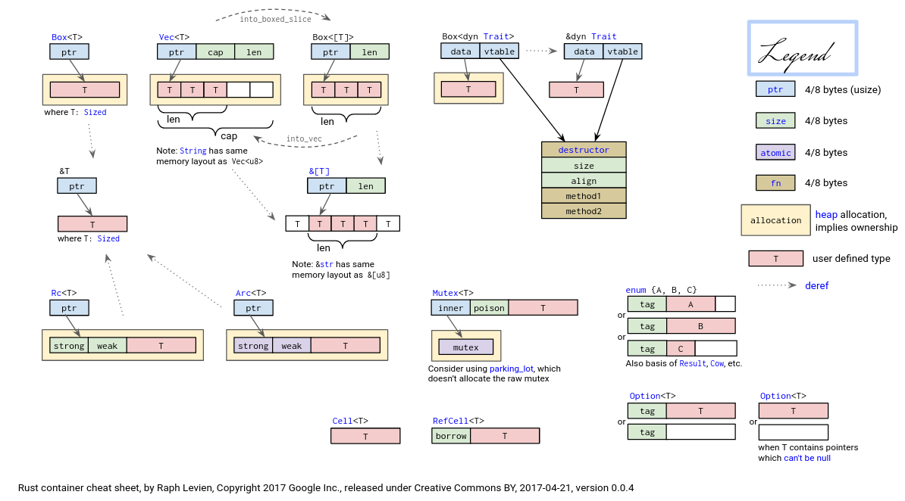
the mind map of the smart pointer’s memory allocation
1.3 problem: we need heap! macro
according to the api doc:
https://api.drone-os.com/drone-core/0.14/drone_core/heap/index.html#usage
#![allow(unused)]
fn main() {
use drone_core::heap;
// Define a concrete heap type with the layout defined in the Drone.toml
heap! {
// Heap configuration key in `Drone.toml`.
config => main;
/// The main heap allocator generated from the `Drone.toml`.
metadata => pub Heap;
// Use this heap as the global allocator.
global => true;
// Uncomment the following line to enable heap tracing feature:
// trace_port => 31;
}
// Create a static instance of the heap type and declare it as the global
// allocator.
/// The global allocator.
#[global_allocator]
pub static HEAP: Heap = Heap::new();
}we need to use the macro heap, which is a proc-macro of rust, we have to know it’s grammar:
you should know workspace:
As the macro in drone is so poor in designing, I give up port it to my project. So I try to construct a global allocator myself.
there is my reference:
Heap Allocation | Writing an OS in Rust
Allocator Designs | Writing an OS in Rust
When I implementing the allocator above, as it discussed, we also need linked list to optimize our design:
Allocator Designs | Writing an OS in Rust
I leave the tutorial’s linked list example, but still use the linked_list_allocator crate because of the merge of freed blocks.
Rust-uC/OS II开发杂记
本篇主要内容
本篇的主要内容为，在开发过程中遇到的一些代码上的问题，包括Rust的语言特性，以及对Embassy和uCOSII更深层次的一点理解和一些变动
1. rust cargo error
1.1 cargo shows error
rust analyzer runs at the same time you run a cargo command after updating the toolchain file. If it’s not that please open a new rustup issue
https://github.com/rust-lang/rust-clippy/issues/12763
The workaround is to uninstall the toolchain and reinstall it, usually stopping rust analyzer or similar while you’re doing that
1.2 cargo stuck in waiting for cargo metadata or cargo check
https://github.com/rust-lang/rust-analyzer/issues/10910
1.3 A Chinese problem, we may need mirror accelerate
https://juejin.cn/post/7133482060307496997
and we set a proxy for git
https://blog.csdn.net/yoyo_u/article/details/132637141
2. defmt
as the code show below, the defmt and log feature can not be active at the same time.
#[cfg(all(feature = "defmt", feature = "log"))]
compile_error!("You may not enable both `defmt` and `log` features.");
3. Why Embassy-Executor’s test can run with src in no_std?
https://stackoverflow.com/questions/28185854/how-do-i-test-crates-with-no-std
4. rust conditional compilation
4.1 how to use [env] section of .cargo/config.toml
https://doc.rust-lang.org/cargo/reference/config.html
4.2 the usage of cfg & cfg_attr
https://doc.rust-lang.org/reference/conditional-compilation.html
5.covariant
https://doc.rust-lang.org/reference/subtyping.html
https://stackoverflow.com/questions/74990774/how-to-understand-covariance-in-rust
https://doc.rust-lang.org/nomicon/subtyping.html
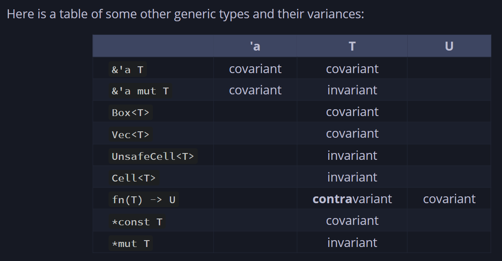
6. fnonce vs fnmut vs fn rust
https://google.github.io/comprehensive-rust/std-traits/closures.html
7. how can we transfer from a function pointer to a closure
8. const fn
The const fn can be called at compiling time so there are some restrictions of it(Just like cpp?).
https://doc.rust-lang.org/reference/const_eval.html
9. feature edition2021 is required
Caused by:
feature edition2021 is required
consider adding cargo-features = ["edition2021"] to the manifest
however, my problem is that my toolchain set the rust so old
#![allow(unused)]
fn main() {
[toolchain]
channel = "nightly-2024-06-18"
components = [ "clippy", "llvm-tools-preview", "rust-src", "rustfmt" ]
profile = "minimal"
}10. liveshare give full access
11. can’t use lazy_static with no_std
https://stackoverflow.com/questions/73049446/could-not-compile-lazy-static
https://github.com/rust-lang-nursery/lazy-static.rs/issues/35
12. the layout of rust
https://doc.rust-lang.org/reference/type-layout.html
https://doc.rust-lang.org/nightly/core/alloc/struct.Layout.html
13. how to design the OSTCBTbl
To make space allocation certain, we can not design the OSTCBTbl as uC/OS. In uC/OS the TCBs’ size is confirmed and same. But in our Rust-uC/OS, because we use future, the size of TaskStorage is not the same, and we can not confirmed it before we know how the async func is defined.
We can find that the source of the problem is the size of futures of every TaskStorage is different, but we want to make it the same to avoid some tough issues related to memory.
There is another way to solve this problem: using pointer. But unavoidably there will be some raw pointers and unsafe code block. But for now, we will take this approach. In the future, we can wrap the raw pointer by some types to make our code safe.
14. the Function of UnsafeCell
Quote from copilot:
内部可变性：允许在外部看似不可变的情况下，修改
UnsafeCell<T>内部的值。这对于实现像RefCell<T>和Mutex<T>这样的类型非常重要，这些类型提供了在运行时而不是编译时检查借用规则的能力。 绕过借用规则：正常情况下，Rust不允许在存在不可变引用的同时创建可变引用，因为这可能导致数据竞争和不一致的状态。然而，通过使用UnsafeCell<T>，开发者可以手动管理这种访问，允许在不违反所有权模型的前提下，进行更灵活的内存访问。 安全性责任：使用UnsafeCell<T>意味着绕过了Rust编译器的安全检查，将安全性的责任转移到了开发者身上。开发者需要确保使用UnsafeCell<T>时不会引入数据竞争或其他安全问题。 底层构建块：UnsafeCell<T>通常被用作构建更高级别抽象的底层构建块，如同步原语（Mutex、RwLock等）或其他需要内部可变性的类型。直接使用UnsafeCell<T>是不常见的，除非你正在实现这些高级抽象。
So, only when the inner var is immutable, but we need it to be mutable temporary will we wrap the var in UnsafeCell . It is common to wrap static var or var with static life-cycles in UnsafeCell
15. the import of Future
In the definition of TCB, we need to import the future of the task. But for Future is a trait, so we only import it as a trait bound:
#![allow(unused)]
fn main() {
pub(crate) struct OS_TCB<F: Future + 'static>{...}
}But we want to be uncoupled so that in other crate, only OS_TCB_REF can be visited. So we wrap the TCB as OS_TCB_REF:
#![allow(unused)]
fn main() {
pub struct OS_TCB_REF{
ptr:NonNull<OS_TCB>,
}
}But after we import the Future, we need to add a trait bound to OS_TCB_REF too:
pub struct OS_TCB_REF<F: Future + 'static>{
ptr:NonNull<OS_TCB<F>>,
}
Besides, everything about the OS_TCB_REF needs to be added a trait bound. As a result, there will be too much var having a static life time, which is not what we want to see.
In Embassy, the TCB is separated from the future：
pub struct TaskStorage<F: Future + 'static> {
raw: TaskHeader,
future: UninitCell<F>, // Valid if STATE_SPAWNED
}
TaskRef still point to TaskHeader , which has nothing to do with Future.:
#![allow(unused)]
fn main() {
#[derive(Clone, Copy)]
pub struct TaskRef {
ptr: NonNull<TaskHeader>,
}
}In this way, there is no need to add a trait bound to TaskRef . So it can be recycled freely. When we want to get the TaskStorage , we can use type casting, for TaskHeader is TaskStorage ’s first member.
So we will refer to the realization of Embassy. So in OS_init, we should alloc an array of OS_TASK_STORAGE, instead of OS_TCB .
16. the Executor
In the Rust-uC we imagine, there is no concept of thread. So there just need an executor, which I will make it lazy_static.
Besides, there is also no need to add a member to TCB to store the executor, which is different to Embassy.
17. String & str
At the beginning, we can only use str, for it is a slice, which doesn’t require a heap allocator.
But there is still one problem: the size of str can be confirmed when compiling. So we have to impl a heap allocator. Otherwise, we can only use unsafe code.
After we impl a heap allocator, we can use the String type, which is Sized in Rust.
18. Global Static Var
In the first version of our uC/OS, we just use pub and static to define global var. It is so annoyed because it makes our code unsafe. In the second version of Rust-uC, we try to refer to the realization of Embassy and rCore.
In Embassy, the RtcDriver is static and we need to change its member in the static life time. It’s definition looks like:
#![allow(unused)]
fn main() {
embassy_time_driver::time_driver_impl!(static DRIVER: RtcDriver = RtcDriver {
period: AtomicU32::new(0),
alarm_count: AtomicU8::new(0),
alarms: Mutex::const_new(CriticalSectionRawMutex::new(), [ALARM_STATE_NEW; ALARM_COUNT]),
#[cfg(feature = "low-power")]
rtc: Mutex::const_new(CriticalSectionRawMutex::new(), Cell::new(None)),
});
}Here, Embassy use Mutex and AtomicU32 for the static structure’s member to ensure the thread safety. The Mutex used here is defined in embassy::sync and AtomicU32 is in the core::sync::atomic . Actually, there is also a Mutex in critical-section . It expose a safe interface to us. Because there is only one core on our board, so we can ensure that if we acquire a critical section, the interrupt will be disable and task will not switch.
So we will use AtomicU32 to keep var of primary data type thread safe, and use critical-section::Mutex<RefCell<T>> to keep var of other type safe.
Besides, by using Atomic , we can change the global var without critical section:
#![allow(unused)]
fn main() {
fn next_period(&self) {
let r = regs_gp16();
// We only modify the period from the timer interrupt, so we know this can't race.
let period = self.period.load(Ordering::Relaxed) + 1;
self.period.store(period, Ordering::Relaxed);
let t = (period as u64) << 15;
critical_section::with(move |cs| {
r.dier().modify(move |w| {
for n in 0..ALARM_COUNT {
let alarm = &self.alarms.borrow(cs)[n];
let at = alarm.timestamp.get();
if at < t + 0xc000 {
// just enable it. `set_alarm` has already set the correct CCR val.
w.set_ccie(n + 1, true);
}
}
})
})
}
}The period’s type is AtomicU32 and it is one of the members of the RtcDriver. But in the example pick out from Embassy above, it can be get and set without a critical section.
Before, our code looks like this:
#![allow(unused)]
fn main() {
// need a cs
critical_section::with(|_cs| unsafe {
if OS_IS_RUNNING && OSINT_NESTING > 0 {
OSINT_NESTING -= 1;
}
let _os_int_nesting = OSINT_NESTING;
// info!("in os_int_exit the OSINT_NESTING is {}", OSINT_NESTING);
if OS_IS_RUNNING && OSINT_NESTING == 0 {
os_sched_new();
OS_TCB_HIGH_RDY = OS_TCB_PRIO_TBL[OS_PRIO_HIGH_RDY as usize];
(*OS_TCB_HIGH_RDY).stride += OS_STRIDE_NUM / (OS_LOWEST_PRIO - (*OS_TCB_HIGH_RDY).os_prio as usize);
if OS_PRIO_CUR != OS_PRIO_HIGH_RDY {
// update the stride
OSIntCtxSw();
}
}
});
}Though we can ensure there will only one thread enter the critical section, there is still a huge unsafe block.
But now our code may looks like:
static FOO: Mutex<RefCell<i32>> = Mutex::new(RefCell::new(42));
fn main() {
critical_section::with(|cs| {
// Instead of calling this
let _ = FOO.borrow(cs).take();
// Call this
let _ = FOO.take(cs);
// `RefCell::borrow` and `RefCell::borrow_mut` are renamed to
// `borrow_ref` and `borrow_ref_mut` to avoid name collisions
let _: &mut i32 = &mut *FOO.borrow_ref_mut(cs);
})
}Good, there is no unsafe block.
开发时间表
-
上下文切换的分类：分成抢占和让权两种；
-
上下文切换的过程分成保存和恢复两步。抢占时的保存会占用堆栈，可视为线程；让权时的保存会让出堆栈，可视为协程。恢复过程按是否需要空栈分成线程恢复和协程恢复两种情况。
-
可能的实施线路：
- 在uCOS中没有中断的场景下，引入embassy，以支持协程；（线程被视为不会暂停的协程）
- 统一线程和协程的控制块结构TCB（Task Control Block）；
- 只有让权情况出现，让权时栈空，可以复用栈；（解决堆栈的分配和回收问题）
- 在uCOS中没有中断的场景下，引入embassy和优先级，以支持线程和协程的优先级调度；
- 按优先级选就绪任务（可能是线程，也可能是协程）；
- 在uCOS中有中断的场景下，引入embassy和优先级，以支持线程和协程的优先级调度；
- 中断就是抢占情况，需要保存堆栈，并（有可能）分配新堆栈，用于恢复下一个任务；
时间线安排：
7.28-7.29：完成思路设计结束
7.30-8.5：至少完成线路1整体代码部分，测试以及debug可以留到下周
8.6-8.12：至少完成线路1，最好线路2也完成了
8.13-8.19： 完成线路2以及完成最终的抢占设计的代码部分，测试以及debug可以留到下周
8.20-8.26：完成所有测试与debug
8.27-…: 做一些数据分析以及形成较好的文档
修正时间线：
8.13-8.19: 完成所有代码，开始debug
8.20-8.26: 完成所有测试与debug
- 在uCOS中没有中断的场景下，引入embassy，以支持协程；（线程被视为不会暂停的协程）